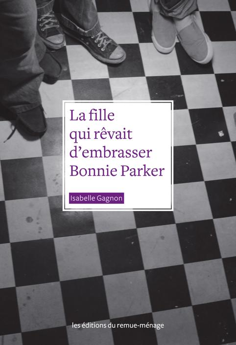
La fille
qui rêvait
d’embrasser
Bonnie Parker
De la même auteure
Le souffle des baleines, Remue-ménage, 2007.
Marie Mirage, Remue-ménage, 2000.
Nous remercions les organismes
qui ont soutenu ce projet de livre :
Le Centre de solidarité lesbienne
www.solidaritelesbienne.qc.ca
La Coalition des familles homoparentales
www.familleshomoparentales.org
La Fondation Émergence
www.fondationemergence.org
Le GRIS-Montréal
www.gris.ca
Le GRIS-Québec
www.grisquebec.org
Le GRIS-Chaudière-Appalaches
www.grischap.qc.ca
Jeunesse Lambda
www.jeunesselambda.org
La fille
qui rêvait
d’embrasser
Bonnie Parker
Isabelle Gagnon
les éditions du remue-ménage
Couverture et infographie : Annick Désormeaux
Photographie de la couverture : Jenna Marie Wakani
Photographies intérieur : Perrine « La Fraicheur » Sauviat
Catalogage avant publication de Bibliothèque et Archives
nationales du Québec et Bibliothèque et Archives Canada
Gagnon, Isabelle
La fille qui rêvait d’embrasser Bonnie Parker
Pour les jeunes de 14 ans et plus.
ISBN 978-2-89091-288-5
I. Titre.
PS8563.A327F54 2010
jC843’.6
C2010-940936-1
PS9563.A327F54 2010
© Les Éditions du remue-ménage
Dépôt légal: deuxième trimestre 2010
Bibliothèque et Archives Canada
Bibliothèque et Archives nationales du Québec
Les Éditions du remue-ménage
110, rue Sainte-Thérèse, bureau 501
Montréal (Québec) H2Y 1E6
Tél.: 514 876-0097/Téléc.: 514 876-7951
info@editions-remuemenage.qc.ca
www.editions-remuemenage.qc.ca
Les Éditions du remue-ménage bénéficient du soutien de la Société de développement
des entreprises culturelles du Québec (SODEC) pour leur programme d’édition et du
soutien du Conseil des arts et des lettres du Québec. Nous remercions le Conseil des Arts
du Canada de l’aide accordée à notre programme de publication. Nous reconnaissons
l’aide financière du gouvernement du Canada par l’entremise du Fonds du livre du
Canada pour nos activités d’édition.
À la mémoire de Liz Trobishi,
17 ans, assassinée le 2 août 2009
au centre gai et lesbien de Tel-Aviv
6
7
Préface
Je me rappel e qu’el e était lumineuse et qu’el e voulait
que je l’appel e Marie. Ce qu’el e venait raconter à mon micro
était trop douloureux pour utiliser son vrai prénom.
Marie avait 19 ans. El e aimait une femme. C’était sa différence,
qui longtemps avait été lourde à porter. La noirceur de son cœur
avait pris tant de place que pour l’oublier, el e s’était souvent fait
mal, à se faire saigner. Sa vie était devenue si douloureuse qu’el e
avait tenté de se l’enlever deux fois. Peu importe où el e était,
sa différence était tout ce qu’on lui renvoyait. C’était comme
ça depuis des années, avant même qu’el e ne puisse mettre
des mots sur ce qu’el e ressentait.
Cet après-midi de notre rencontre, moi qui savais que c’était
étincelant d’avoir 16 ans et d’être amoureuse, je me suis aperçue
que ça pouvait aussi être vraiment très sombre.
Marie a fini par retrouver la lumière en el e et s’y accrocher.
Cette lumière qui inondait maintenant le micro devant sa bouche.
Son histoire qu’el e brûlait de raconter pour en toucher d’autres.
Ce fut ma seule rencontre avec Marie et aujourd’hui je pense
à el e. Je me dis qu’à 15 ans, si el e avait pu lire La fil e qui rêvait
d’embrasser Bonnie Parker, peut-être que cette lumière serait
venue plus tôt.
Annie Desrochers
Annie Desrochers anime Ados radio à Radio-Canada,
une émission quotidienne conçue pour les 12-17 ans,
qui explore différents sujets tant en entrevue qu’en
reportage et donne une tribune unique aux jeunes.
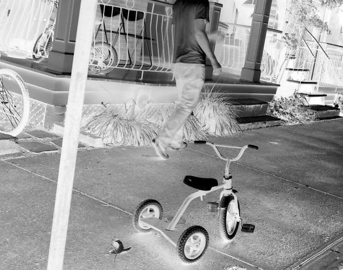
10
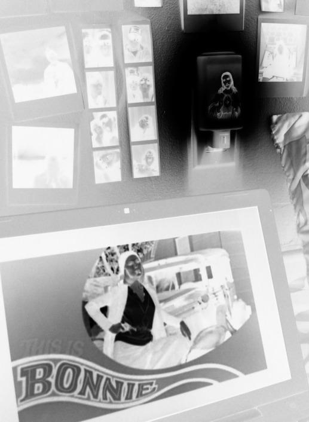
Florence
et Andy
11
5 avril
Parfois, quand j’observe autour de moi, j’ai l’impression de ne pas
être à ma place. Je me regarde dans le miroir et me demande ce que
je fais ici, dans ce pays, cette vil e, cette famil e. À la base, je devais
être destinée à vivre sur une autre planète et j’ai dû échouer par er-
reur sur la Terre. Qui sait ? Peut-être qu’un peu de sang martien
coule dans mes veines. Ma mère n’arrête pas de me répéter que je
suis compliquée. Selon el e, j’aime me compliquer l’existence. Je
coupe les cheveux en quatre et je cherche des poux et des puces là
où, paraît-il, il n’y en a pas. Il y a des jours où ma mère devient fol e à
cause de moi et de mes petites phrases assassines. Il faut dire que
j’ai le don de trouver les bons mots pour la faire rager. El e et moi
sommes totalement incompatibles. Je n’arrive pas à comprendre
comment j’ai pu passer 9 mois dans son ventre sans déclencher
chez el e des crises d’urticaire. C’est étonnant qu’el e soit ma mère.
Nous n’avons tel ement rien en commun ! Et le pire, c’est que les
gens n’arrêtent pas de dire qu’on se ressemble comme deux gout-
tes d’eau… Tout pour me dégoûter ! S’il y a bien une chose au monde
que je ne veux pas, c’est ressembler à ma mère.
Je trouve ma vie d’un ennui mortel à côté de tous les rêves qui tra-
versent ma tête d’extraterrestre. D’après Andy, j’ai une imagination
sans limite. Il dit que j’ai une âme d’artiste et que c’est pour ça qu’on
s’entend aussi bien, lui et moi. Andy, c’est mon meil eur ami. Toutes
les fil es de l’école sont fol es de lui. Mais moi, je n’ai jamais cherché à
le séduire. Il faut croire que je n’ai pas le cerveau fait comme celui
des autres fil es… Je dois avouer que ma vie sentimentale n’est pas
très palpitante. On pourrait même dire que pour une fil e de 16 ans,
je ne suis pas en avance sur mon âge pour tout ce qui a trait au sexe.
Mais les quelques garçons qui s’intéressent à moi ne me plaisent
12
jamais assez pour al er plus loin que quelques baisers. D’ail eurs, si
on veut me mettre en colère, on n’a rien qu’à me demander si j’ai
un chum. C’est tel ement humiliant de devoir répondre à cette
question ! Non, je n’ai pas de petit ami. J’en ai juste un très grand :
Andy. Ce que j’aime par-dessus tout chez lui, c’est qu’il est libre. Ce
n’est pas un mouton qui suit bêêêtement le troupeau. Depuis quel-
ques mois, quand ça tourne au vinaigre avec mes parents, je vais
me réfugier chez lui. Il vit seul avec sa mère, Marjolaine. C’est l’infir-
mière de l’école. Andy n’a jamais connu son père et franchement, il
n’a pas l’air de s’en porter plus mal. Il faut dire que Marjolaine est
vraiment géniale. Quand je parle avec el e, je me sens quelqu’un
d’important. Ça me change de ma mère qui croit que j’ai encore 10
ans. Personnel ement, je pense qu’il devrait y avoir une loi autori-
sant les adolescents à changer de parents. C’est stupide de devoir
vivre avec des gens qui ne comprennent rien à ce que vous êtes !
Marjolaine, si je pouvais choisir, j’aimerais bien qu’el e soit ma mère
adoptive.
Pour ma fête, j’ai demandé une nouvel e guitare électrique. Depuis
quatre ans, je suis des cours et mon prof dit que j’ai un vrai talent.
Pas autant qu’Andy, c’est certain, mais quand même, je me dé-
brouil e pas si mal avec mes dix doigts. L’avantage quand on a très
peu d’amis et pas d’amoureux, c’est qu’on a beaucoup de temps
libre. Je passe donc plusieurs heures par jour à jouer de la guitare,
pour le plus grand malheur de ma mère qui ne supporte pas mes
goûts musicaux.
Depuis le début de l’année scolaire, Andy et moi avons le projet
de monter un groupe. C’est pour cette raison que j’ai demandé une
nouvel e guitare, une Gibson. Je nous imagine bien, ensemble sur
une scène, devant une foule en délire. Dans mes rêves, je chante
13
super bien et j’ai un corps de déesse comme les fil es dans les
magazines. Tout le monde veut être ma meil eure amie ! Je sais,
c’est un rêve ridicule… Je chante faux et je suis tout sauf sexy. Et si
les fil es veulent être copines avec moi, c’est plus pour s’approcher
du bel Andy que par affinité avec la bizarre Florence que je suis.
D’ail eurs, je sais que dans mon dos, tout le monde se demande ce
qu’Andy me trouve. Il se fiche de ce que les autres peuvent penser !
Je dirais même qu’il m’aime bien parce que je ne suis pas comme les
autres, à battre des cils et à lui faire des sourires en me trémous-
sant. Il m’accepte comme je suis et s’il n’était pas là… Non. J’aime
mieux ne pas penser à ce que je deviendrais si Andy disparaissait de
ma vie…
Il fait un temps à ne pas mettre un chat dehors. Marjolaine a
proposé à Andy et à Florence de regarder un film de son impres-
sionnante collection de DVD. Sur l’écran, on voit Faye Dunaway
sourire une dernière fois à Warren Beatty avant que leurs deux
corps ne soient criblés de balles.
— Ouf ! J’avais oublié à quel point ce film est violent ! Mais
qu’est-ce qu’ils sont beaux tous les deux ! déclare Marjolaine,
pendant que défile le générique.
— C’est vrai que Faye Dunaway est vraiment belle, confirme
Florence, encore sous le choc des dernières images du film Bonnie
and Clyde.
Marjolaine tourne la tête vers elle et fronce les sourcils.
— Je trouve que tu as un petit quelque chose de Faye Dunaway…
14
Je ne sais pas, les yeux peut-être ? Non ! C’est la bouche ! Tes lè-
vres, ton sourire ! Tu ne trouves pas, toi ?
Andy se tourne à son tour vers son amie et l’examine avec
attention.
— Hey ! Vous avez fini de me regarder comme ça ? Il ne faut pas
exagérer. Je suis super laide à côté d’elle. Franchement, je ne lui
ressemble pas du tout, faut arrêter de délirer !
— Pourquoi tu te dénigres sans arrêt ? Tu es super belle ! Tu as
des yeux magnifiques !
Marjolaine se tait et replace derrière l’oreille de Florence la
mèche de cheveux rebelle qui fait de l’ombre à ses grands yeux
bruns.
— Flo, ne t’en fais pas, ma mère exagère tout le temps. Je ne vois
pas comment tu pourrais avoir le sourire de Faye Dunaway, puis-
que tu fais tout le temps la gueule !
Andy bombe le torse et relève le menton. Il adore la faire sortir
de ses gonds. Une fois de plus, il a gagné son pari. Elle lui balance
un coussin à la tête et se rue sur lui.
— Bonnie and Clyde ! Et si notre groupe s’appelait Bonnie and
Clyde ? lance Andy en baissant les armes.
Florence en profite pour lui asséner un dernier coup de coussin
au visage. Elle reprend son souffle et réfléchit quelques
secondes.
— J’ADORE !!
Les deux amis se tapent dans les mains. L’affaire est signée. Un
groupe vient de naître.
— Tu restes manger avec nous ? demande Marjolaine.
Florence perd son sourire et soupire.
— Merci, c’est gentil de m’inviter, mais je ne peux pas rester.
C’est l’anniversaire de mon idiot de frère. Ma mère veut qu’on soit
tous ensemble à nous faire la gueule autour d’un gros gâteau au
15
chocolat… D’ailleurs, si je ne veux pas me faire assassiner comme
Bonnie Parker, je ferais mieux d’y aller.
Marjolaine attrape son manteau et ses clés de voiture.
— Vu le temps qu’il fait, je vais te reconduire. Pendant ce temps-
là, tu peux éplucher des pommes de terre, mon grand ?
Andy ne semble pas ravi de la proposition de sa mère, mais se
dirige quand même vers la cuisine. Il saisit trois grosses patates
et commence à jongler. Florence le regarde faire, un sourire en
coin. Tout ce à quoi il touche se transforme en jeu.
— À demain Clyde, murmure-t-elle.
Andy reste concentré sur ses mains.
— C’est ça, Bonnie, à demain !
26 avril
Ça y est : Andy est amoureux et cette fois, il a l’air d’avoir bien mordu
à l’hameçon ! El e s’appel e Chloé et c’est la fil e la plus prétentieuse
que je connaisse. Il dit qu’il ne veut pas sortir avec el e, mais franche-
ment, il n’y a qu’à voir sa tête quand el e passe près de lui pour com-
prendre… El e pourrait lui demander de se coucher par terre ou de
donner la patte comme un gentil chienchien et je crois qu’il le ferait !
Bref, je ne reconnais plus mon Andy et ça me rend malade. Je suis
déçue qu’il soit attiré par ce genre de fil e. El e est tel ement superfi-
ciel e ! Si j’étais à sa place, jamais je ne me laisserais manipuler par
une fil e comme Chloé. Je ne comprends pas comment fonction-
nent les gars. On dirait que la testostérone leur embrouil e la tête.
16
Ce soir, Marjolaine m’a raccompagnée en voiture, officiel ement à
cause du mauvais temps, mais je sais qu’el e voulait se retrouver
seule avec moi pour parler. El e voit bien que je ne suis pas dans mon
assiette depuis quelque temps et el e voudrait savoir pourquoi.
Mais moi, je reste muette comme une carpe. Je n’ai pas envie de
parler et d’expliquer pourquoi je broie du noir. El e et Andy trou-
vent que je me dénigre sans arrêt et c’est vrai, je ne m’aime pas. J’ai
l’impression que mon corps est trop petit pour moi. J’étouffe, je
me sens à l’étroit dans ma carcasse. Je ressens parfois de drôles de
choses et ça me fait peur. Comme tout à l’heure, quand l’espace
d’une minute, j’aurais aimé être à la place de Clyde Barrow pour em-
brasser Bonnie Parker. El e est tel ement bel e. . rien à voir avec moi.
Quand j’étais toute petite, il m’arrivait de rêver d’être un garçon
pour pouvoir être galante avec les fil es. Au fond, ce vieux rêve ne
m’a jamais complètement quittée. De temps à autre, il sort du pla-
card et ça me trouble à chaque fois. Je crois que l’idée qu’Andy
soit amoureux fait surgir tout un tas de questions et de vieil es
histoires que je n’ai pas envie d’affronter…
Quand je suis arrivée à la maison, ma mère m’a engueulée parce
que je rentrais tard et que tout le monde m’attendait pour le repas
d’anniversaire de Thomas. Heureusement, mes grands-parents
étaient là et ma mère s’est vite calmée. On a mangé du poulet et des
frites, le menu préféré de mon frère. Ensuite, il a soufflé les 14
bougies de son gâteau et j’ai enfin pu monter dans ma chambre
écouter de la musique. Marjolaine m’a parlé de Serge Gainsbourg
dans la voiture. J’ai trouvé sur Internet la chanson « Bonnie and
Clyde » dont el e me parlait. Une chance qu’il y a la musique pour
me remonter le moral ! J’espère vraiment qu’Andy va tenir sa pro-
messe pour le groupe. J’espère aussi que Chloé va changer d’école
ou attraper une maladie grave et ultracontagieuse. Je sais, je suis
17
méchante, mais il faut bien que je reste fidèle à ma réputation !
Bon… Il est tard et je vais m’étendre sur mon lit. Avant de m’endor-
mir, j’aime bien prendre le temps de rêvasser. Tout est si beau et
parfait dans mes rêves éveil és. Rien à voir avec la vraie vie.
Florence est allongée sur le canapé, bien au chaud sous la
couette. Elle observe sa mère qui passe et repasse sans arrêt de-
vant elle, à la recherche d’une paire de chaussures, d’un dossier
important ou de la clé de sa voiture… Elle se demande ce qu’elle
peut manger pour être toujours aussi agitée. Le son de ses talons
qui claquent contre le parquet lui tombe sur les nerfs.
— Tu fais encore de la fièvre. N’oublie pas de prendre tes médi-
caments toutes les quatre heures, insiste son père, les sourcils
froncés.
Florence repousse la main paternelle qui vient se poser sur son
front.
— Pa, tu pourrais aller chercher mon Ipod dans ma chambre ?
implore-t-elle, avec son plus bel air de chien battu.
— Thomas ! Tu peux descendre le Ipod de ta sœur ?
— Paul, tu penseras à prendre des œufs et du lait ce soir avant
de rentrer ? demande Sandra, un tube de rouge à lèvres dans une
main et son téléphone dans l’autre. Je vais faire des crêpes pour
souper.
18
Paul acquiesce et caresse furtivement le dos de sa femme. Ce
geste d’affection agace Florence et elle détourne la tête.
Thomas s’approche d’elle d’un pas nonchalant, les écouteurs
sur les oreilles. Il ronchonne et prend un air dégoûté.
— T’écoutes vraiment juste de la musique de vieux ! Lâche un
peu les années 70. Il y a eu d’autres groupes depuis les Beatles !
— Si je voulais connaître ton avis, je te le demanderais, répond
Florence d’une voix rocailleuse.
Thomas hausse les épaules pour marquer son indifférence. Il
pousse les pieds de sa sœur et s’assoit sur le canapé.
— Tu sais quoi ? Hier soir à la sortie de l’école, j’ai vu Andy. Il te-
nait Chloé par la main. Je les ai même vus s’embrasser.
Il ferme les yeux et mime un baiser avec la langue. Florence
s’énerve et éjecte son frère du canapé en le frappant à coups
de pied.
— T’es vraiment une grosse brute ! Pas étonnant qu’Andy te dé-
laisse pour une autre fille.
— Et toi, t’es vraiment le plus grand des imbéciles sur Terre !
Andy, c’est juste un ami et je n’ai jamais voulu sortir avec lui ! Et
s’il veut embrasser Chloé, c’est ses affaires. T’es tellement con !
Tu ne comprends jamais rien !
— Ho ! Ça suffit vous deux ! Pas de gros mots dans cette mai-
son, intervient Sandra, les poings sur les hanches. Thomas, si tu
veux que je te dépose à l’école, dépêche-toi. Lâche ta sœur un
peu ! Tu vois bien qu’elle est malade. Florence, il y a de la soupe et
du jambon dans le frigo pour ce midi, ajoute-t-elle sur un ton
plus doux.
Sandra attrape son fils par les épaules et le pousse vers la
porte.
— C’est vraiment plus fort que toi ! Il faut toujours que tu la fas-
ses fâcher.
19
Elle lui donne un coup de coude dans les côtes.
— Aïe ! Tu me fais mal ! Les femmes de cette maison sont vrai-
ment des brutes !
— C’est ça, plains-toi, petite nature.
En revenant dans le salon, Paul voit sa fille roulée en boule sous
la couette, les yeux fermés et les écouteurs sur les oreilles. Il pen-
se une seconde lui toucher l’épaule, mais se ravise au dernier mo-
ment. Il sent que sa fille n’est pas d’humeur à accepter une sur-
dose d’affection. . Sans la quitter des yeux, il s’éloigne du canapé.
Sa petite fille a disparu et a été remplacée par une ado qu’il
connaît mal. Il prend sa mallette et quitte lui aussi la maison, le
vague à l’âme en pensant au temps qui passe si vite, trop vite.
Florence est enfin seule et ne pense plus qu’à ce que vient de lui
raconter son frère. Depuis trois jours, elle se bat contre une vio-
lente bronchite et ne peut sortir de la maison. Apparemment, elle
a manqué des épisodes. Les choses ont évolué entre Chloé et
Andy, et ce dernier n’a pas cru bon l’en informer. Ses yeux s’em-
plissent de larmes.
— Rien ne sera jamais plus comme avant… balbutie-t-elle.
5 mai
Je suis sous le choc !
Ma mère vient de me dire que Raphaël e va revenir… Raph revient
20
vivre à Montréal ! Je ne m’attendais vraiment pas à ça. Ma mère a
beaucoup hésité avant de m’apprendre la nouvel e. El e sait à quel
point ça a été difficile de nous séparer, el e avait peur de ma réac-
tion. El e n’avait pas tort… J’étais tel ement bouleversée et mal à
l’aise que je n’ai trouvé qu’une platitude à lui balancer à la figure. J’ai
fait cel e qui n’avait pas entendu, je l’ai regardée droit dans les yeux
et je lui ai conseil é de se faire faire un lifting. Il ne faut pas chercher
le rapport, il n’y en a pas. J’ai blessé ma mère. J’ai vu des larmes dans
ses yeux et cette fois-ci, ça m’a fait de la peine pour el e. Ma mère n’a
pas besoin de lifting. Honnêtement, el e ne fait pas son âge. Cette
fois, je crois que j’ai perdu les pédales… Mais en me disant que Ra-
phaël e al ait revenir, c’est comme si el e m’avait donné une gifle ou
un coup de poing dans le ventre.
Mon amitié avec Andy est très forte, mais ça n’a rien à voir avec les
liens qui nous unissaient Raphaël e et moi. Quand el e est partie il y
a deux ans, ma vie s’est écroulée et, depuis, tout a changé.
La veil e de son départ, je suis al ée dormir chez el e. Nous n’avons
pas pu fermer l’œil de la nuit. Nous voulions profiter au maximum
de ces dernières heures ensemble. C’était très bizarre. Il n’y avait
plus un seul meuble dans la pièce, à part un matelas gonflable au sol.
Plus rien sur les murs, juste des démarcations plus pâles, là où
étaient accrochées ses affiches. C’est tout ce qui restait des années
passées là. Jamais je n’oublierai cet appartement vide et l’écho que
ça faisait quand on parlait fort. Rien qu’à y repenser, j’en ai la chair
de poule. C’était hyper douloureux de penser qu’à compter du len-
demain, un océan nous séparerait. Je ne savais pas comment j’al ais
faire pour vivre sans Raph. Nous étions sur la même longueur d’on-
de. Nous aimions la même musique, les mêmes films, les mêmes li-
vres. El e adorait la guitare. C’est pour ça que j’ai commencé à en
21
jouer. En fait, c’est avec el e que j’aurais voulu former un groupe.
Raphaël e, el e me comprenait sans que j’aie à parler. Je me sou-
viens, nous avions vu un reportage à la télé sur la télépathie et nous
étions persuadées de posséder cet étrange pouvoir de communi-
cation. Notre amitié devait durer toute la vie. Nous n’en doutions
pas une seule seconde. Depuis l’âge de huit ans, nous étions
inséparables.
Mais voilà, les choses ne se passent pas toujours comme dans les
rêves ou dans les films…
Quand les parents de Raphaël e se sont séparés, el e avait deux
choix : suivre son père à Londres où il venait d’être muté, ou sa mère
qui voulait retourner dans son pays d’origine, la Suède. El e a préfé-
ré suivre son père. Au début, quand el e est arrivée à Londres, nous
passions des heures et des heures sur Messenger, à planifier quand
nous pourrions nous revoir et à nous raconter les moindres détails
de nos journées. Je restais éveil ée jusqu’à tard dans la nuit pour
pouvoir lui parler à son réveil à cause du décalage horaire… C’est
fou comme el e me manquait ! Je me sentais comme si on m’avait
coupé un bras. J’avais perdu une partie de moi-même. Mais le plus
dur restait à venir.
Environ six mois après son départ, tout a basculé. Du jour au lende-
main, je n’ai plus reçu aucune nouvel e de Raphaël e. El e s’est dé-
connectée de Messenger et n’a plus répondu à mes messages. Au
début, j’étais fol e d’inquiétude. J’ai essayé d’appeler chez el e des
tonnes de fois. Je tombais toujours sur le répondeur. J’ai imaginé le
pire. El e avait peut-être eu un accident. El e était peut-être morte
sans que son père me prévienne. Et puis un soir, au lieu du répon-
deur, j’ai entendu sa voix : « Hel o ? ». J’ai crié. Je lui ai dit que j’avais
22
eu peur qu’il lui soit arrivé quelque chose de grave. El e ne répon-
dait rien, je n’entendais que le son de la télé derrière. Puis el e a
prononcé ces quelques phrases, qui m’ont fracassé le cœur :
« Florence, ne m’appel e plus. S’il te plaît, ne m’écris plus, c’est inu-
tile. Notre amitié est devenue impossible. Oublie-moi, fais comme
si je n’avais jamais existé. » La ligne s’est coupée sans que je puisse
dire un mot. J’ai cru que ma tête al ait exploser. J’ai pleuré des
nuits entières. Je ne mangeais plus, ne touchais plus à ma guitare.
J’avais besoin de Raphaël e pour me sentir bien. Qu’el e ne soit
plus là, près de moi, ça me torturait. Mais de ne plus avoir de nou-
vel es, ça me tuait. Raphaël e, c’était plus qu’une amie. El e était
tout pour moi. Aujourd’hui je peux le dire : je l’aimais trop. Je ne
crois pas que les autres fil es rêvent d’être un garçon pour être
plus proche de leur amie… Moi, j’ai déjà pensé à ça. Être un garçon
m’aurait simplifié la vie.
Mes parents ont fini par s’inquiéter et m’ont amenée chez un psy.
Au bout de quatre séances chez monsieur Laurent, j’ai recommen-
cé à manger et à jouer de la guitare. Le psy a expliqué à mes parents
que j’étais hypersensible et que mon imagination était un peu plus
développée que la moyenne. Mais il ne fal ait pas qu’ils s’inquiètent,
j’al ais survivre à mon adolescence. Mes parents ont fait ouf ! et
tout est rentré dans l’ordre. Du moins, en apparence. Je n’ai plus ja-
mais prononcé le nom de Raphaël e devant eux. Ils étaient contents
de moi. J’étais redevenue moi-même. C’est à partir de ce moment
que je suis devenue amie avec Andy. Un garçon. Les amitiés entre
fil es, je ne voulais plus en entendre parler. Trop compliqué. J’avais
peur que les choses se mélangent, comme avec Raphaël e. Une fois
ça suffit. Avec Andy au moins, si je finissais par avoir envie de l’em-
brasser, ça ne serait pas un problème. Je n’ai jamais parlé de cette
envie à personne. Pas même à monsieur Laurent.
23
Le fait que Raphaël e revienne m’angoisse. J’ai peur que cer taines
choses refassent surface. J’ai peur de mes rêves, de mes pensées
les plus profondes. Et puis je ne sais pas si je supporterai de revoir
son visage après tout ce temps passé à la pleurer et à la détester. Je
lui en veux de m’avoir laissée tomber comme une vieil e chaussette
trouée. Mais d’un autre côté, j’aimerais bien qu’el e m’explique au
moins une fois pourquoi el e a voulu me faire disparaître de sa vie
de façon aussi brutale.
— Florence ! Flo !
Florence se retourne et aperçoit Andy qui court dans sa direc-
tion, un bras dans les airs au milieu des autres élèves qui sortent
de l’école en se bousculant.
— Hé ! J’ai cru que tu ne t’arrêterais jamais. Tu ne m’entendais
pas ?
Florence hausse les épaules et se remet en marche d’un pas
nonchalant.
— J’étais perdue dans mes pensées, bredouille-t-elle.
— Ça, ce n’est rien de bien nouveau. Tu es toujours perdue dans
tes pensées ! Tu peux arrêter à la maison ? J’ai quelque chose à te
faire écouter.
Florence hésite, puis acquiesce d’un léger signe de tête. Elle suit
son ami et l’entend lui parler de tout et de rien. Jamais elle ne l’a vu
aussi bavard. Elle en déduit qu’il n’est pas vraiment à l’aise et qu’il
n’arrive pas à lui dire la vérité au sujet de Chloé.
24
— Flo, c’est quoi le problème ? T’es super bizarre depuis tout à
l’heure. T’as encore de la fièvre ?
Florence regarde le bout de ses chaussures et rentre le cou dans
les épaules.
— Je croyais qu’on était les deux meilleurs amis du monde, fi-
nit-elle par dire.
— Ben, oui. T’es mon amie, s’empresse de répondre Andy.
Elle n’arrive pas à cacher son agacement et garde le silence.
— Qu’est-ce que tu as ? On dirait que tu as mangé de la vache
enragée !
— Oublie ça… Je suis de mauvaise humeur. Ça va passer,
marmonne-t-elle.
— Et tu ne veux pas me dire pourquoi t’es de mauvaise
humeur ?
Elle cesse de marcher et regarde son ami dans les yeux.
— Je sais que tu sors avec Chloé et j’aurais aimé que tu me le di-
ses toi-même. Parce qu’au cas où tu ne le saurais pas, toute l’école
en parle.
Andy devient rouge jusqu’aux oreilles et enfonce les mains
dans les poches avant de son jean.
— Je… Tu étais super malade, je ne voulais pas te le dire avant
que t’ailles mieux…
— Andy, j’aimerais mieux être sourde plutôt que d’entendre ça !
— Bon, bon ! J’avais peur de ta réaction et puis là, tu me prouves
que j’avais raison de penser que tu le prendrais mal.
Florence soupire et tourne les talons. L’attitude d’Andy la rend
folle. Elle ne rêve plus que d’une chose, rentrer chez elle, s’enfer-
mer dans sa chambre et jouer de la guitare toute seule.
— Florence ! Tu ne vas pas t’en aller comme ça ? Florence !
— C’est ça… Tu peux crier mon nom dix mille fois, ça ne chan-
gera rien… Va retrouver ta Chloé. .
25
Andy n’a pas entendu la dernière réplique de son amie et la re-
garde s’éloigner, dépité.
10 mai
Je me sens triste et terriblement seule. Je viens de passer une heu-
re enfermée dans la sal e de bain à me regarder bien en face, et ce
que j’ai vu m’a achevée. . Je n’aime pas ma tête. Je n’aime pas mes
seins, mes fesses, mon nez en trompette (le même maudit nez que
ma mère…). Mes cheveux raides comme des baguettes et impossi-
bles à coiffer. Qui pourrait bien vouloir de moi à part une âme dé-
sespérée ? Je suis banale. Il existe des modèles plus laids que le
mien, c’est certain. Mais je crois que rien au monde n’est pire que la
banalité. Pourtant, il y a tant de choses en moi qui ne demandent
qu’à exploser ! Le seul moment où je me sens vraiment bien, c’est
quand je joue de la guitare avec Andy. Mais comme on ne se parle
plus depuis trois jours…
J’ai sorti tout un tas de vieil es photos qui traînaient dans le fond
d’un tiroir. Des photos de famil e, toutes plus ridicules les unes que
les autres. Mes parents avec mon frère bébé dans les bras et moi
qui boude dans un coin, parce qu’ils n’ont d’yeux que pour ce petit
être ignoble qui pleure tout le temps. Une autre, le jour de mon
deuxième anniversaire, le visage couvert de glaçage au chocolat.
Puis d’autres, moins ridicules et que je suis contente de revoir. Moi,
à cheval. J’ai 11 ans et un sourire radieux il umine mon visage. Les
26
parents de Raphaël e m’avaient amenée en vacances avec eux.
Trois semaines avec Raph, 24 heures sur 24… Nous montions à che-
val tous les jours et j’adorais ça ! Je me sentais grande, forte, invinci-
ble sur cette jument. Libre aussi. Je me sentais libre et heureuse.
Rien à voir avec aujourd’hui. J’ai perdu mon insouciance et mon as-
surance. Qui suis-je vraiment ? Depuis que Raph est partie, je crois
que je me suis perdue. Maintenant qu’el e va revenir, vais-je me re-
trouver ? Rien de moins sûr.
Il faut que j’appel e Andy. J’ai besoin de faire de la musique, de jouer
de la guitare avec lui. J’ai besoin de lui. Au diable l’orgueil… Il y a ur-
gence. Comme dit le proverbe, quand la maison brûle, il faut appe-
ler les pompiers.
Florence referme son journal et inspire profondément. Elle ap-
pelle Andy.
— Salut. T’as fini de bouder ? Tu m’aimes encore un petit peu ?
demande-t-il, narquois.
— Continue comme ça et je raccroche tout de suite, espèce de
niaiseux !
Andy rit et rassure Florence.
— Non, j’arrête ! Je suis content que tu m’appelles. Tu as raison,
j’aurais dû te le dire tout de suite pour Chloé. Tu me pardonnes ?
— Si tu me promets de ne jamais arrêter de jouer de la guitare
avec moi, je te pardonne. Et puis il ne faut jamais que cette… que
Chloé t’empêche de me voir. Je te rappelle qu’on a un grand projet
tous les deux.
Andy soupire.
27
— Je te le jure, Florence. Il y aura toujours de la place pour toi. Et
le groupe Bonnie and Clyde va bientôt faire parler de lui. Ça aussi
je te le jure. D’ailleurs, ma mère nous a trouvé un endroit où prati-
quer. C’est pas une super nouvelle, ça ?
— Oui. C’est génial. s’exclame Florence, sans conviction.
Le silence s’installe. Florence est soulagée de ne pas avoir Andy
en face d’elle. Elle ne voudrait pas qu’il voie les larmes dans ses
yeux.
— Andy, ça ne va pas du tout. .
— Qu’est-ce que t’as ? Tu t’es encore engueulée avec ta mère ?
Ton frère a cassé ton Ipod ?
— C’est pire que ça. Il y a quelques jours, ma mère a croisé le
père de Raphaëlle en sortant du travail. Il lui a dit que son contrat
à Londres n’avait pas été renouvelé et qu’il rentrait à Montréal en
juin.
Florence s’assoit par terre, le dos contre le mur.
— Raphaëlle ? Ton ex-meilleure amie ? Elle va revenir vivre ici
avec son père ? Wow ! Toute une nouvelle !
— Comme tu dis. . Ça fait plus d’un an qu’elle ne m’a pas donné
signe de vie. Honnêtement, je ne suis pas certaine d’avoir envie de
la revoir.
— T’en fais pas. Je suis là, moi ! Viens à la maison. Je vais te faire
entendre ma dernière composition. Je pense que c’est pas si mal,
mais j’ai besoin que tu me donnes ton avis. Et puis je veux te mon-
trer sur Internet la basse que ma mère a promis de m’acheter si j’ai
des bonnes notes en sciences. Inutile de te dire que j’ai jamais été
aussi motivé à étudier !
Florence s’efforce de sourire. Elle se sent un peu mieux.
— OK. J’arrive. Je suis là dans une demi-heure.
Florence raccroche. Avant de quitter sa chambre, son regard
s’arrête sur une série de photos en noir et blanc prises dans une
28
cabine photo. Raphaëlle et elle, joue contre joue, rivalisant en gri-
maces de tout genre. « Deux petits singes qui s’aiment », songe-
t-elle en glissant sa guitare dans son étui.
15 mai
C’est maintenant officiel. Raphaël e revient à la fin de l’année sco-
laire. Son père a contacté le mien pour qu’il lui trouve au plus vite un
appartement. Comme s’il n’y avait pas d’autres agents immobiliers
dans cette vil e ! J’espère que mon père leur trouvera quelque cho-
se de très loin, à l’autre bout de la vil e ou, pourquoi pas, de l’autre
côté du pont, en banlieue. J’ai trop peur de la revoir. Je n’en dors
plus la nuit. Andy dit que je suis stupide, que c’est peut-être l’occa-
sion de faire la paix avec el e. Mais je ne vois pas comment je pour-
rais faire la paix alors qu’il n’y a jamais eu de guerre ! C’est el e qui
m’a laissée tomber et je ne sais même pas pourquoi. De toute fa-
çon, Andy, depuis que Chloé s’est greffée à son cou, je ne peux plus
me fier à ce qu’il raconte. Tout ce qui sort de la bouche de la bel e
Chloé se transforme en vérité absolue… Au moins une phrase sur
deux prononcée par Andy commence maintenant par : « Chloé dit
que » ou « Chloé pense que » ! Je crois que l’amour rend les gens
bêtes. Et la dernière grosse bêtise d’Andy dépasse les limites ! Il
veut que Chloé soit la chanteuse de Bonnie and Clyde. C’est certain,
el e est… mais sa voix ! El e ne connaît rien à la musique et chante du
nez. Cette fil e est entièrement insupportable !
29
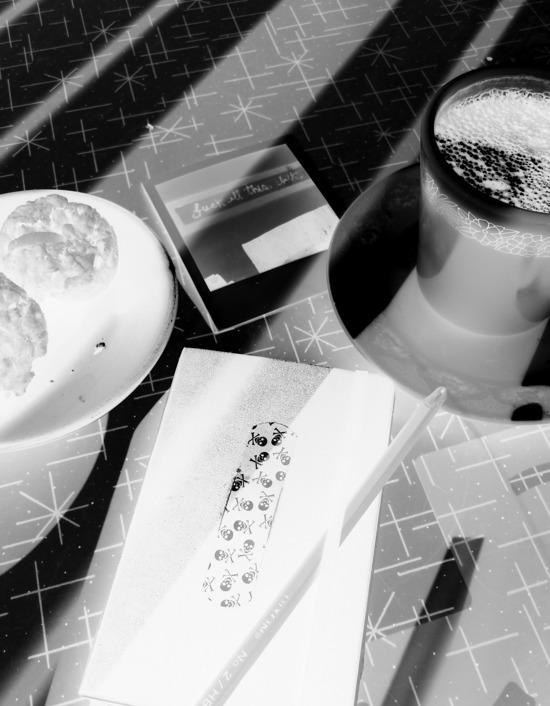
Avant Chloé, il n’y avait jamais eu de conflit entre Andy et moi. De-
puis qu’el e est dans nos pattes, ça n’arrête pas, on s’engueule pour
un oui ou pour un non. Il dit que c’est parce que je suis jalouse. La
vérité, c’est qu’il a changé depuis qu’il sort avec cette fil e. Ma vie est
sens dessus dessous… Entre le retour de Raphaël e et les idées sau-
grenues d’Andy, je n’ai plus un seul moment de répit. Mes parents
disent que je suis de plus en plus agressive. C’est vrai, je le suis. Je
me sens comme un volcan qui va entrer en éruption. J’ai un trop-
plein à l’intérieur et je ne sais pas quand la lave va jail ir. J’ai peur de
ne pas être à la hauteur de mes rêves. Peur de l’amour et de ce qu’il
peut provoquer. Peur de me tromper de chemin, de ne pas pren-
dre le bon tournant. J’ai dix mil e pensées à la seconde. C’est le
fouil is dans ma tête et dans mon cœur. Quand Andy embrasse
Chloé devant moi, c’est vrai, je suis jalouse. Pas parce que je vou-
drais être à la place de Chloé, mais parce que je suis seule, céliba-
taire, et que l’amour des autres m’exaspère. J’ai envie de vivre, de
faire des choses, de ressentir des sensations que je ne connais pas
encore. Je bouil e. Et je n’en peux plus de chasser Raphaël e hors de
mes pensées. Amour, amitié… Les deux qui se fondent… Je ne sais
plus quoi penser.
Ma vie m’épuise.
— Florence ! Tu as bientôt fini ? J’ai un rendez-vous important
avec un gros client ce matin.
31
Le père de Florence frappe à la porte et attend une réponse qui
ne vient pas. Il fait les cent pas devant la salle de bain en
grognant.
— Florence, s’il te plaît, sors de là! Tu n’es pas toute seule au
monde, je te signale ! Nous avons aussi le droit de nous laver !
La porte reste close. Florence est devenue sourde. Rouge
d’exaspération, Paul descend retrouver sa femme à la cuisine.
— Tu veux bien venir convaincre ta fille de m’accorder le droit
de prendre ma douche ?
— Comment ? MA fille ? Il me semble que tu étais bien dans le
même lit que moi le soir où nous avons…
— Sandra, je ne peux pas être en retard ce matin, viens donc
m’aider à faire sortir NOTRE fille de la salle de bain !
La mère de Florence soupire et abandonne avec regret ses
toasts et son café pour suivre son mari à l’étage.
— Florence, c’est maman. Ouvre.
Rien ne bouge derrière la porte.
— Chérie, je sais que tu es en colère après nous et personnelle-
ment, je regrette la… commence Sandra avant d’être interrompue
par Paul.
— Sandra, tu ne vas tout de même pas t’excuser pour hier ?
Non ! Là, elle dépasse les bornes ! Florence ! J’en ai par-dessus la
tête de tes caprices ! Je compte jusqu’à trois et si tu n’as toujours
pas ouvert la porte, je défonce ! UN, DEUX…
Sandra saisit l’avant-bras de son mari et met un doigt sur ses lè-
vres pour le faire taire. Un cliquetis se fait entendre et la poignée
de la porte s’abaisse. En apercevant Florence, Paul recule de trois
pas et Sandra pousse un cri.
Elle est là, devant eux, le sourire aux lèvres.
— Ben quoi ? Vous n’aimez pas ma nouvelle coupe de cheveux ?
32
26 mai
Il faut que je quitte mes parents. J’ai beau réfléchir, je ne trouve pas
d’autre solution. Entre eux et moi, ce n’est plus possible. On s’en-
gueule tout le temps et hier soir, quand papa m’a annoncé que le
père de Raphaël e venait de trouver l’appart de ses rêves à deux pas
de la maison, j’ai cru que j’al ais le mordre. Je lui avais pourtant bien
demandé de ne pas leur faire visiter d’appartement trop près de
chez nous ! Il m’a dit que ce n’était pas lui qui avait trouvé la mer-
veil e, mais son col ègue Marcel. . Je pense que mon père m’a dit la
vérité, mais j’étais tel ement en colère que je me suis mise à l’insul-
ter comme du poisson pourri. Et là, ma mère s’est levée, el e m’a re-
gardée du haut de son mètre soixante-quatre et m’a offert la cla-
que de l’année. Jamais el e n’avait osé al er jusque-là. J’ai eu ses
doigts étampés sur ma joue toute la soirée, tel ement el e y a mis du
cœur… Je sais que j’ai dépassé les bornes, mais est-ce que je méri-
tais qu’el e me frappe ? Ma mère, qui se vante tout le temps d’avoir
lu Françoise Dolto, el e devrait savoir que ce n’est pas bien de gifler
son enfant. Mais bon, el e est comme ça ma mère. De bel es paroles,
mais jamais les gestes qui vont avec… Bref, tout ce que je sais, c’est
que je ne retournerai pas chez le psy comme le veulent mes pa-
rents. Selon eux, ma relation avec Raphaël e n’a jamais été normale.
Ma mère a dit que ce n’est pas normal d’être à ce point déstabilisée
par le départ et le retour d’une amie. Et puis el e en a rajouté une
couche en disant qu’el e avait peur pour moi, pour mon équilibre et
l’équilibre de la famil e.
Après ça, j’ai préféré me taire et j’ai couru me réfugier dans ma
chambre. J’ai mis la musique super forte pour bien faire compren-
dre à mes parents que j’en ai par-dessus la tête de vivre avec eux.
Puis au bout d’un certain temps, j’ai baissé le son et je me suis
33
branchée sur Messenger. J’ai voulu contacter Andy, mais il n’était
pas disponible. J’ai appelé chez lui et sa mère m’a dit qu’il avait ame-
né Chloé au restaurant… Tu parles ! Pendant que c’est la tempête
dans ma vie, lui s’amuse avec sa blonde ! J’ai raccroché aussi sec.
J’étais super énervée et je ne savais pas trop quoi faire pour me cal-
mer. J’ai pris ma guitare et j’ai joué les trucs les plus destroy que je
connais pour me défouler. J’ai joué jusqu’à ce que mes doigts n’en
puissent plus. Après, je suis tombée raide sur mon lit, les bras en
croix, prête à être crucifiée sur place. Je me suis calmée et j’ai
réfléchi.
Pour ce qui est de Raphaël e, il faut que je grandisse un peu et
que je trouve le courage d’affronter la réalité. Raphaël e va revenir.
Raphaël e habitera tout près de chez moi. Pour une fois, je crois
bien que ma mère a raison. Quand il est question de Raph, je perds
la tête.
Maintenant, il faut que je trouve le sommeil. J’ai besoin de me repo-
ser le cerveau encore plus que le corps. Je vais fermer les yeux et
je vais essayer d’imaginer à quoi peut bien ressembler Raphaël e
aujourd’hui. Ses cheveux sont-ils de la même longueur et de la
même couleur ? A-t-el e pris du poids ? Et moi ? Est-ce que j’ai beau-
coup changé physiquement ? Je suis sûre que ma nouvel e tête
la fera rire. Je n’ai jamais voulu être comme tout le monde. J’ai
toujours aimé cultiver ma différence. Je ne m’habil e pas comme
les autres fil es de mon âge, je n’écoute pas la même musique, je ne
m’intéresse pas aux mêmes choses. Mes parents pensent que je
me suis fait une coupe punk juste pour les provoquer, mais ça n’a
vraiment rien à voir. Si je me suis coupé les cheveux, c’est
pour que ma tête ressemble à ce qu’il y a à l’intérieur de moi. Le
chaos, le désordre, la désinvolture. J’adore ce mot en ce moment.
34
« Désinvolture ». Je le crierais à m’en faire éclater les cordes vocales !
Raphaël e aimait beaucoup ce côté-là de moi. J’osais faire des cho-
ses qu’el e rêvait de faire. El e a toujours été plus sage, plus réservée
que moi. Raphaël e, c’est un nom d’ange. Moi, j’étais plutôt un genre
de petit démon. Je lui apportais un peu de folie et el e m’apportait
un grain de sagesse. L’équilibre parfait. Qu’en reste-t-il aujourd’hui ?
Et s’il avait poussé des petites cornes à l’ange Raphaël e ? Je ven-
drais mon âme au diable pour effacer tout ce temps perdu l’une
sans l’autre. Je me demande qui el e a pu rencontrer là-bas. Est-ce
qu’el e a un chum ? Est-ce qu’el e a couché avec un garçon ? On
s’était juré de tout se raconter sur notre première fois. Moi je
n’aurai encore rien de bien croustil ant à lui apprendre sur le sujet…
Je me sens tel ement nul e par rapport à ça. Mais il est hors de ques-
tion que je fasse l’amour sans être amoureuse ! Alors comme le dit
Blanche-Neige à ses sept nains : un jour mon prince viendra. Pour
l’instant, il se cache plutôt bien et ça me fait souffrir. J’ai beau fanfa-
ronner et vouloir paraître au-dessus de tout, mon cœur est fait
comme celui des autres. Un gros muscle rouge qui se serre dans ma
poitrine quand je suis seule dans mon lit la nuit.
Andy ne sait plus quoi faire pour redonner le sourire à sa
blonde. Quoi qu’il dise, Chloé gémit et critique chacune de ses
paroles. Surtout quand il est question de Bonnie and Clyde et de
Florence.
— T’as vu sa nouvelle coupe de cheveux ? On dirait qu’elle est
passée sous la tondeuse à gazon ! C’est horrible ! Il faut vraiment
35
avoir besoin d’attention pour faire une chose pareille…
— Tu te trompes, elle n’a pas fait ça pour se faire remarquer.
Florence se fiche de ce que pensent les autres. Et puis chacun est
libre de s’habiller et de se coiffer comme il veut.
— Toi, on sait bien ! Ta grande copine, tout ce qu’elle dit ou fait,
c’est toujours cool ! Tu ne la vois pas comme elle est, ta Florence.
— Et selon toi, elle est comment, ma grande copine ? demande
Andy, un peu inquiet de la réponse de Chloé.
— Je ne sais pas, mais il y a quelque chose qui cloche. La preuve,
à part toi, il n’y a pas grand monde qui s’intéresse à elle. Madame
est toujours dans son coin, à se prendre pour une intello avec ses
livres, sa vieille musique et ses vieux films. On dirait qu’elle prend
tout le monde de haut !
Ses dernières paroles piquent Andy à vif. Il ne peut pas laisser
dire des choses pareilles.
— Moi, je ne l’ai jamais trouvée si bizarre que ça. Ce n’est pas
parce qu’elle s’habille dans les friperies, qu’elle s’intéresse à plein
de choses et qu’elle est un peu solitaire que c’est une folle ou une
prétentieuse. Au contraire ! Moi je pense qu’elle est plus intelli-
gente que bien du monde.
— Tu vois ? Tu prends toujours sa défense ! Pourquoi tu ne sors
pas avec elle plutôt qu’avec moi alors, si elle est aussi cool et intel-
ligente que tu le dis ? Et si je te demandais de choisir entre elle et
moi, tu dirais quoi ?
Chloé semble fière de sa dernière réplique. Elle fixe Andy dans
les yeux. Le regard d’un pitbull qui n’a pas mangé depuis deux
jours.
— Quoi ? T’es jalouse de Florence ? C’est ça ?
Marjolaine choisit ce moment pour faire irruption dans la cui-
sine et fait comme si elle n’avait rien entendu.
— Ça va les amoureux ?
36
Chloé fait un léger signe affirmatif et annonce qu’elle doit
s’en aller.
— Hé ! Attends ! Tu viens juste d’arriver. Tu ne vas quand même
pas partir comme ça ? demande Andy, en la poursuivant jusqu’à
la porte d’entrée.
— Demain, ne compte pas sur moi pour assister à ta répétition.
J’ai autre chose à faire que de vous regarder vous défouler sur vos
guitares. Et pour répondre à ta dernière question, je ne suis pas
jalouse de Florence. Je n’aime pas cette fille et ça me déplaît qu’el-
le soit aussi souvent avec toi, c’est tout.
Elle tourne les talons et claque la porte derrière elle. Andy
s’adosse au mur, excédé. Il n’a pas envie que son amitié avec Flo-
rence brise son histoire avec Chloé. D’un autre côté, Florence est
la petite sœur qu’il n’a jamais eue et il est hors de question de
moins la voir.
Marjolaine vient le retrouver et le regarde bien en face.
— Andy, fais attention. Les amours passent, mais les amitiés
restent. Ne te trompe pas, murmure-t-elle.
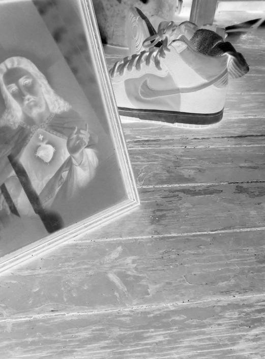
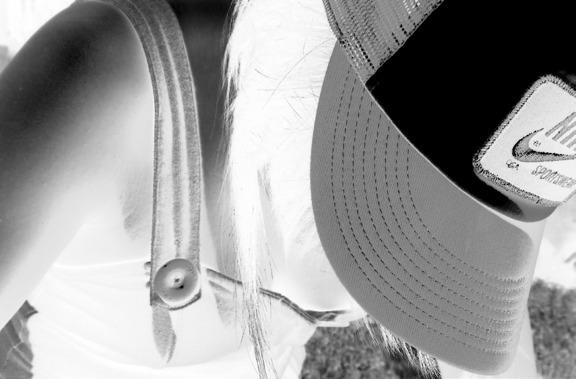
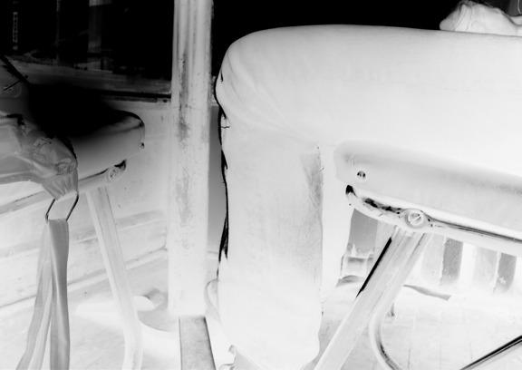
Raphaëlle
1 e rjuil et
Voilà plus d’un mois que je n’ai pas écrit dans mon journal… Il faut
dire qu’entre la fin de l’année scolaire, les répétitions du groupe et
l’arrivée de Raphaël e, ma vie a été plutôt bien remplie. Depuis quel-
que temps, tout s’est accéléré. Tout change, tout bouge, se bous-
cule en moi et autour de moi. J’ai toujours envie de dormir, mais
quand je m’al onge, mon cerveau carbure à 100 km / h et je n’arrive
pas à trouver le sommeil. Je me demande si le calme reviendra un
jour. Autant de mouvement perturbe la rêveuse que je suis. . Des
problèmes concrets me sautent dessus et je n’ai pas d’autre choix
que de faire face à la réalité. Une métamorphose s’est enclenchée
et il est impossible de faire machine arrière. On dirait que je suis en
train de me mettre au monde. Pas évident tous les jours d’accou-
cher de soi-même…
Une des rares bonnes nouvel es du mois, c’est qu’Andy a trouvé un
batteur pour le groupe ! C’est le grand frère d’un gars de sa
classe. Il est un peu plus vieux que nous, mais on s’entend super bien.
Il étudie en arts plastiques au cégep du Vieux-Montréal. La
semaine dernière, il m’a offert une toile qu’il a faite. El e est tel e-
ment grande qu’el e couvre tout un mur de ma chambre. C’est de
l’art abstrait. Comme je fais de l’insomnie, je passe des heures à la
regarder de mon lit. C’est comme si je partais en voyage au travers
des couleurs. Mes parents n’aiment pas trop, mais ils aiment bien
Carl, donc ils n’ont rien dit. C’est d’ail eurs un peu surprenant de leur
part d’aimer Carl. Il a un look un peu spécial et il se maquil e les yeux.
Il faut dire que depuis quelque temps, mes parents ont changé d’at-
titude à mon égard. On dirait qu’ils ont enfin compris que j’avais
grandi, que je n’étais plus une petite fil e. Je pense aussi que ma
mère se sent coupable de m’avoir giflée, il y a quelques semaines.
40
El e a l’air de s’intéresser à ce que je fais soudainement. Parfois c’est
agaçant, mais il y a aussi des jours où c’est plutôt agréable d’avoir
une mère qui montre de l’intérêt pour ce que je fais. Je me demande
si mes parents voulaient vraiment des enfants. J’ai souvent l’im-
pression que mon frère et moi on est des boulets pour eux. Peut-
être qu’on leur gâche autant la vie qu’ils gâchent la nôtre ?
Quant à Andy, il a eu la basse que lui avait promise Marjolaine et il
serait le gars le plus heureux sur Terre si Chloé ne l’avait pas quitté
pour un autre. Il ne m’en parle pas trop parce qu’il sait que je n’aime
pas Chloé, mais il souffre et ça me fait bizarre de le voir comme ça.
J’ai l’impression de me revoir quand Raphaël e a coupé les ponts
avec moi. Dans mon cas, était-ce une peine d’amour ou une peine
d’amitié ? Je me pose de plus en plus de questions sur mes senti-
ments pour Raph. D’autant plus que depuis quelques jours, el e là,
tout près. Chaque fois que je dois sortir de la maison, je marche
super vite en regardant le bout de mes pieds de peur de la croiser.
Je n’ai toujours pas trouvé le courage de la revoir. Je sais que cette
rencontre est inévitable. Nous al ons nous revoir et il faudra parler.
Qu’arriverais-je à lui dire ? Et el e, que me racontera-t-el e ? J’y pen-
se sans arrêt, Raphaël e est toujours là, quelque part dans ma tête.
L’autre nuit, j’ai rêvé d’el e. El e était assise sur mon lit et me deman-
dait pardon. Quand je me suis réveil ée, j’avais l’estomac noué et
j’ai cru que j’al ais vomir. Il faut que je réussisse à al er sonner à sa
porte. Je dois en finir avec cette histoire. Je n’en peux plus d’être
angoissée en permanence. Demain, je dois le faire. Qu’il pleuve,
qu’il vente ou qu’il neige, je me rendrai jusqu’à el e. Raphaël e.
41
Florence inspire un grand coup et pose son doigt sur la son-
nette. Jamais elle ne s’est sentie aussi seule qu’en ce moment, face
à cette porte close, dos à un soleil de plomb. Vingt-deux longues
secondes s’écoulent avant qu’on vienne ouvrir et qu’un visage
connu fasse son apparition. Raphaëlle. Plus grande, plus mince,
le visage un peu moins enfantin qu’avant. Raphaëlle est là, agrip-
pée à la porte comme à une bouée de sauvetage, incapable de
décrocher les yeux du visage de Florence. Deux cœurs battent à
tout rompre. Deux gorges se serrent. Deux estomacs se nouent.
Une bouche se décide à parler.
— Je savais bien que tu allais finir par passer… Entre.
Florence se demande si elle ne doit pas s’enfuir en courant s’en-
fermer dans sa chambre. Une douleur s’installe dans sa poitrine.
Elle suit Raphaëlle, observe sa nuque, ses cheveux blonds, plus
courts qu’avant. Elle s’assoit dans un fauteuil sans desserrer les
lèvres, incapable de débiter le discours qu’elle a répété un nombre
incalculable de fois depuis des semaines. Raphaëlle se montre
plus courageuse et rompt une fois de plus le silence. Elle ne se
perd pas dans les banalités et va droit au but.
— Tu dois être en colère contre moi. Tu dois m’en vouloir à
mort et tu as entièrement raison de me détester. Je te dois des ex-
plications et, crois-moi, ce n’est pas facile de me retrouver face à
toi aujourd’hui. Si tu ne veux plus jamais me revoir après ce que je
vais te dire, je pourrai comprendre…Tout est allé tellement vite !
Je me suis retrouvée à Londres, loin de toi. J’étais complètement
perdue. Là-bas, j’ai rencontré une autre fille, Mary. Elle aussi
venait d’arriver dans cette ville. Comme toi, elle était différente
des autres. Comme toi, elle me faisait mourir de rire. Elle m’a
tout de suite plu. Un soir, elle est venue à la maison et je ne pour-
rais pas t’expliquer comment les choses en sont arrivées là, mais
elle m’a embrassée et je me suis laissé faire. Mary m’aimait. Et
42
c’était réciproque. Moi aussi j’étais attirée par elle. Après ce bai-
ser, il y en a eu plusieurs autres et là, c’est devenu très compliqué.
Comment t’expliquer… C’était l’enfer et le bonheur en même
temps. On n’osait pas en parler à personne. Nous nous enfer-
mions dans ma chambre ou dans la sienne et passions nos soi-
rées à nous embrasser et à nous caresser. C’est à ce moment que
j’ai coupé les ponts avec toi. Je n’étais pas capable de t’avouer ce
que je faisais avec Mary et je me sentais mal de te cacher cette
partie de ma vie. J’avais honte, Florence…
La voix de Raphaëlle tremble en prononçant cette dernière
phrase. Son visage est écarlate et ses yeux ne peuvent plus se dé-
tacher de ceux de Florence. La peur est partout en elle. Peur du
jugement, peur de décevoir, de blesser, d’être rejetée. Florence
s’est enfoncée dans le fauteuil. Elle a du mal à respirer. Son corps
pèse une tonne. Il y a trop de choses à assimiler en même temps. Il
faut qu’elle quitte cet appartement, qu’elle échappe aux yeux
bleus suppliants de Raphaëlle. Ses doigts s’accrochent au cuir du
fauteuil, elle se lève.
— Raph… Je ne peux pas… Je vais partir. Je ne peux vrai ment
pas. .
Florence ne termine pas sa phrase et quitte l’appartement à
toute vitesse, sans même prendre le temps de refermer la porte
derrière elle. Elle court. Le plus vite qu’elle peut. Elle serre les
poings et court devant des gens qui la regardent les yeux écar-
quillés. Des têtes se tournent sur son passage, des sourcils se
froncent. On cherche derrière elle le méchant loup qui la fait cou-
rir si vite, si loin. Elle atterrit devant chez Andy sans s’en être ren-
du compte. Elle tambourine à coups de poing sur la porte, le vi-
sage inondé de larmes. Marjolaine ouvre, la prend dans ses bras et
l’attire sur le canapé.
— Ma pauvre chérie… Qu’est-ce qui t’arrive ?
43
Andy est figé devant sa meilleure amie qu’il n’a jamais vue pleu-
rer auparavant. Florence est toujours si forte. Il écoute avec atten-
tion son amie raconter ce qui vient de lui arriver, sans bouger,
comme s’il avait peur que le plancher s’ouvre sous ses pieds.
Il ressemble à une statue de sel. Soudain, tout devient clair. Flo-
rence est comme Raphaëlle. Cela ne fait aucun doute pour lui.
Florence est…
— Andy, ne reste pas planté là, va chercher des kleenex et un
grand verre d’eau, ordonne Marjolaine en comprenant ce qui lui
passe par la tête.
Andy sort de sa torpeur et s’élance dans la salle de bain cher-
cher les mouchoirs. « Comment ça se fait que je n’ai jamais com-
pris ? » se demande-t-il, en revenant vers Florence. « Elle est gaie.
C’est évident. Elle aime les filles. Florence préfère les filles aux
garçons. »
4 juil et
On m’a déjà raconté l’histoire d’une personne dont les cheveux
sont devenus tout blancs après un choc nerveux. En me réveil ant
ce matin, je me suis précipitée devant le miroir pour vérifier la cou-
leur de ma crinière, heureusement encore bien brune. Parce que
franchement, les mots qui sont sortis de la bouche de Raphaël e
auraient pu me tuer sur le coup ! Depuis trois jours, j’ai l’impression
de ne plus être dans la réalité, mais dans un film de série B. De mau-
vaises scènes jouées dans des décors minables. Trop gros pour
44
être vrai. Une histoire qui ne tient pas la route avec des acteurs, ou
plutôt des actrices de bas étage. Raphaël e a embrassé et caressé
une fil e et n’a pas été capable de me l’avouer. Raphaël e aime les
fil es. Et la voilà de retour, à quinze minutes à pied de chez moi. Si je
voulais être aussi pathétique que le mauvais film qui est en train de
se tourner, je m’ouvrirais les veines en laissant une lettre à ceux qui
m’aiment pour expliquer mon geste.
Ma tête ressemble à un gros bol de spaghettis au fromage tout
col és ensemble.
Depuis trois jours, j’ai quitté Montréal et je me repose de tout
ça à la campagne. Quand je suis arrivée en larmes chez Andy,
Marjolaine a appelé mes parents pour leur demander la permis-
sion de m’amener passer quelques jours dans le chalet de sa sœur
dans les Cantons de l’Est. Je pense que ma mère était trop conten-
te de prendre des vacances de moi, parce qu’el e a accepté tout
de suite. Me voici donc assise devant un lac, à me débattre avec
les dix mil e maringouins qui veulent me bouffer tout cru et à
jouer de la guitare avec Andy, qui ne semble toujours pas remis
lui non plus de ce qui s’est passé. Parfois, je le surprends en train
de me regarder d’un air bizarre. Il détourne la tête aussi vite et
fait comme si de rien n’était, mais j’ai bien compris à quoi il pense.
Il se dit que je suis moi aussi une… J’ai beau faire des efforts, je
n’arrive pas à prononcer ni à écrire le mot exact… Je me sens ridi-
cule d’avoir peur d’un mot, mais c’est comme ça.
Marjolaine est vraiment super avec moi. El e m’a parlé d’une bonne
amie à el e qui vit avec une femme depuis 10 ans. Deux femmes par-
faitement normales, saines d’esprit et menant la même vie que
Monsieur ou Madame tout le monde. Je crois qu’el e ne sait plus
45
quoi me raconter pour me faire comprendre que l’homosexualité
n’est pas une maladie et que cette différence n’a, au bout du
compte, aucune importance. Je sais déjà tout ça. J’étais même
la première à défendre les gais auparavant. Mais là, la différence
me touche de près. De vraiment trop près. Si je n’avais jamais
ressenti des choses bizarres pour Raphaël e, je n’aurais pas réagi
comme je l’ai fait, je ne me serais pas enfuie comme une voleuse en
apprenant qu’el e avait couché avec une fil e.
Ce qui me choque dans son histoire, c’est que j’ai déjà eu des pen-
sées. . Raphaël e a fait avec une autre ce que nous aurions pu faire
toutes les deux si el e n’était pas partie à Londres. Et là, quand j’y
pense un peu trop longtemps, j’ai envie de disparaître, de me
faire oublier à tout jamais. Si je le pouvais, je me glisserais sous le
vieux tapis de Turquie qui trône au milieu du salon de ce chalet qui
sent l’humidité et le feu de cheminée. J’ai peur de Raphaël e et
j’ai peur de cette fil e qui me regarde dans le miroir. Je ne me recon-
nais plus. Depuis les confidences de Raph, je suis devenue
quelqu’un d’autre. C’est comme si toute ma vie j’avais porté un
masque et que brusquement, on me l’arrachait. J’avais tel ement
l’habitude de ce double visage que j’ai du mal à supporter le vent et
la lumière qui effleurent ma nouvel e peau. Je ne peux plus ignorer
la petite voix qui depuis des années me susurre des choses sur moi-
même. J’ai enfoui mon attirance pour Raphaël e et pas une seule
fois j’ai pensé qu’el e pouvait avoir les mêmes désirs que moi. Tout
ça est vraiment douloureux. Mais que puis-je faire, à part regarder
les choses en face ? C’est moi, mon histoire, mon destin. C’est ma
vie qui s’écrit.
46
Marjolaine est partie au petit matin en laissant une note sur la
table de la cuisine. « Je dois faire un aller-retour à Montréal, de re-
tour ce soir tard, ne m’attendez pas pour souper, il y a tout ce qu’il
faut dans le frigo. Signé : Marjolaine, qui vous adore ».
Andy lit le mot de sa mère et s’étire en poussant un grogne ment.
— Flo, Marjo est partie à Montréal pour la journée. On va pou-
voir brancher les amplis et pousser le son à fond !
Florence prend la note sur la table et la lit à son tour.
— Super ! On va pouvoir travailler les morceaux qu’on a choisis
à la dernière répétition. Tu crois que Carl pourrait venir nous re-
joindre ? Il m’a dit que son père lui laissait sa voiture pour deux
semaines.
Andy hausse les épaules.
— Sais pas. Je vais l’appeler.
Florence ouvre le frigo et boit à même le litre de lait.
— C’est OK, il arrive, annonce Andy en raccrochant le télépho-
ne. Je vais faire un saut dans le lac. Tu viens ?
Florence referme la porte du réfrigérateur d’un coup de
hanche.
— Non. L’eau est trop froide. Je n’ai pas envie.
— Mais non, elle n’est pas froide ! Allez, ne fais pas ta poule
mouillée. T’es plus courageuse que ça d’habitude !
Andy saisit Florence par les poignets et l’entraîne hors du cha-
let. Florence se débat pour échapper à son ami. Elle pousse des
cris, le pince pour qu’il la libère.
— Arrête ! Je n’ai pas envie de me baigner ! Et puis je n’ai pas
mon maillot !
Andy l’attrape et la soulève de terre. Florence s’accroche à son
cou et hurle en battant des pieds.
— Pose-moi par terre, t’es con ! Arrête tes…
Florence n’a pas le temps de terminer sa phrase. Andy s’est ap-
47
proché du quai et l’a lancée dans le lac avant d’y plonger à
son tour. Les deux lutteurs s’engagent dans un féroce combat.
Florence tente de maintenir la tête d’Andy sous l’eau, mais n’y
arrive pas. Ce dernier est plus fort et repousse toujours son
adversaire.
— OK ! j’abandonne annonce Florence, à bout de souffle, un
sourire en coin. T’as gagné, tu es le plus fort…
Andy s’approche lentement d’elle et prend son visage au creux
de ses mains. Il la regarde droit dans les yeux, s’avance encore et
l’embrasse sur la bouche.
— Eh ! Ça ne va pas ? Qu’est-ce que tu fais ? Es-tu fou ?
Florence sort de l’eau. Elle est furieuse. Andy sort à son tour et
court derrière elle.
— Attends ! Flo ! Excuse-moi !
Florence arrive avant lui au chalet et verrouille la porte. Andy
lui crie de venir ouvrir, qu’il s’excuse et qu’il lui faut une serviette
avant de mourir de froid.
Après cinq bonnes minutes de supplications, Florence revient
vers lui, une serviette dans une main et une autre pour cacher ses
seins qui pointent sous son t-shirt trempé. Elle lui jette un regard
glacial.
— Ne refais jamais ça. Tu m’entends ? Ja-mais ça, articule-t-elle
entre les dents.
Andy baisse les yeux.
— Je te le jure. Je ne le referai plus, murmure-t-il, paniqué.
Elle lui balance la serviette en pleine figure et monte à l’étage
s’enfermer dans une chambre.
Andy se laisser tomber sur une chaise en grelottant. Il se sent
nul et ridicule.
— Je suis le roi des cons ! gueule-t-il pour être sûr que Florence
l’entende.
49
5 juil et
Voilà une heure que je suis enfermée dans cette chambre. Je suis en
colère et j’ai envie de pleurer. J’en veux à Andy pour ce qu’il vient
de faire. À un autre moment, j’en aurais peut-être ri, mais pas là,
pas aujourd’hui. Il y a déjà assez de choses compliquées pour en
ajouter une autre. Andy n’a jamais été attiré par moi. Je le sais, on
en a déjà parlé plusieurs fois. Je le considère comme mon frère
et lui comme sa sœur. Pourquoi faire ça ? Il faut croire que ça le per-
turbe lui aussi que je sois peut-être… Bref, j’attends que Carl
arrive pour descendre. Je n’ai pas envie d’être seule avec Andy, je
crois que je pourrais le mordre.
Je me demande comment va Raphaël e. J’imagine que ce n’est pas
la grande forme. El e doit se poser dix mil e questions el e aussi. Je
suis incapable de lui parler et de la voir pour l’instant, mais je pense
à el e tout le temps. Je pense à el e et à Mary, à leurs deux corps l’un
contre l’autre et je sens le sang me monter à la tête. Même mes
oreil es doivent devenir rouges… Pourquoi je ressens de la honte
en imaginant deux fil es ensemble ? Ces images m’attirent autant
qu’el es me perturbent. J’ai hâte que tout ce brouil ard se lève
dans ma tête. Je n’en peux plus d’être dans la confusion, les doutes
et la peur.
Carl vient d’arriver au chalet avec sa batterie. Florence sort en-
fin de sa chambre pour retrouver les deux musiciens au salon.
Carl remarque immédiatement que l’atmosphère est tendue.
50
— Ouais… On ne peut pas dire que ça respire la bonne humeur
dans cette maison !
— Tu te trompes. Je suis super de bonne humeur ! Tout va
pour le mieux dans ma vie ! Mon ex-meilleure amie est lesbienne,
je le suis peut-être moi aussi et Andy, pour sauver mon âme, m’a
embrassée sur la bouche ! Tu vois, tout est parfaitement normal !
Le « mot ». Florence a lâché ce mot qui la hante depuis trois
jours. Elle sort du chalet en trombe. Elle s’est emportée, a tout
déballé d’un coup et le regrette amèrement. Elle ne se sent pas
capable d’affronter le regard éberlué de Carl. Elle retourne au
bord du lac et plonge tête première, tout habillée. Elle ouvre les
yeux sous l’eau. L’air qui s’échappe de ses poumons forme de
grosses bulles à la surface. « Je suis gaie, se dit-elle. Je suis gaie. »
Ses poumons se vident d’un trait et elle remonte en vitesse pour
respirer. « En fait, je n’en sais rien. Une seconde c’est oui, une se-
conde c’est non. Raphaëlle, il va falloir que tu m’aides.»
— Je m’épuise moi-même, murmure-t-elle en retenant ses
larmes.
Les deux garçons se précipitent dehors et la regardent repren-
dre son souffle, soulagés de la voir refaire surface. Carl gratte sa
barbe de trois jours et se tourne vers Andy.
— C’est quoi, cette histoire de fou ?
— Viens. Je pense que Florence a besoin d’être un peu seule…
Je vais tout t’expliquer, prononce Andy, la gorge serrée.
51
5 juil et, en pleine nuit
Je ne sais plus où j’en suis… J’ai perdu le nord. Je ne sais plus si
ce que je pense est réel ou pas. Je ne sais pas si je suis attirée par les
fil es ou les garçons… Je ne sais pas si j’aime Raphaël e ou si je la
déteste. Je ne sais plus non plus si j’en veux à Andy de m’avoir
embrassée… C’est peut-être d’Andy que je suis amoureuse après
tout ? Je ne sais plus où est la frontière entre l’amitié et l’amour.
Et mes parents, comment vont-ils réagir à tout ça ? Ma mère n’a
jamais trouvé ma relation avec Raphaël e normale. El e sera trop
fière d’apprendre qu’el e avait raison ! Tu parles ! Si je suis réel e-
ment gaie, je ne sais pas si el e l’acceptera. Mon père, lui, je pense
qu’il sera un peu sonné, mais il finira par comprendre. Je sais que
ce n’est pas bien de dire ça, mais j’ai toujours été sa « petite pré-
férée ». Quant à mon frère, il n’a jamais rien compris à ma vie. Il va
se moquer de moi, comme d’habitude. Je me suis toujours sentie
différente des autres et je dois dire que cette idée me plaisait bien.
Mais plus aujourd’hui. Pour une fois, j’aimerais bien être comme
tout le monde. Je n’ai pas envie que les autres me regardent com-
me un animal de foire et me pointent du doigt.
Carl m’a dit que si j’étais comme Raphaël e, il n’y avait aucun pro-
blème de son côté. Il m’a dit qu’il côtoyait pas mal d’homos au
cégep et qu’il n’accordait aucune importance à l’orientation
sexuel e des gens. Des personnes aiment les oranges et d’autres
préfèrent les pommes. « Vive la diversité ! » a-t-il crié après un
magnifique solo de batterie. J’aime de plus en plus ce gars-là. C’est
fou comme il est ouvert d’esprit. Et pour ce qui est d’Andy… Il ne
m’a pratiquement pas parlé du reste de la journée. Je crois qu’il ne
sait plus trop quoi penser de moi et de notre relation. Ça me rend
triste. Aujourd’hui, il m’énerve, c’est vrai. Mais je n’ai pas envie
52
de le voir s’éloigner de moi. Jamais je n’ai eu autant besoin de lui
que maintenant.
J’ai laissé la fenêtre ouverte pour entendre la chorale de grenouil es
qui coassent en chœur. Grâce à leurs chants, je me sens un peu
moins seule. J’ai peur d’éteindre la lumière et de me retrouver dans
le noir le plus total. La nuit, Raphaël e prend toute la place dans ma
tête. El e est partout, j’entends son nom, je vois son visage, son sou-
rire. J’espère qu’el e pense autant à moi que je pense à el e. J’ai be-
soin de croire qu’il y a une issue possible pour nous deux. Amitié ou
amour, je ne sais pas encore quel e forme prendra notre relation,
mais j’espère de tout cœur que nous nous retrouverons.
Andy est assis au bord du lac et lance des cailloux à la surface
de l’eau. Il compte les ricochets. Marjolaine l’appelle. C’est l’heure
de partir. En remontant vers le chalet, il aperçoit Florence, déjà
assise sur la banquette arrière de la voiture, les bras croisés sur
la poitrine et le visage dur. « Elle va m’en vouloir pour le reste de
ses jours… » pense-t-il en soupirant.
— Qu’est-ce que vous avez tous les deux ? demande Marjolaine
à voix basse. Il s’est passé quelque chose ? Tu lui as fait des remar-
ques sur Raphaëlle ?
— Ben non ! Rien. Elle est de mauvaise humeur, c’est tout. Elle
est souvent comme ça. Il faut pas lui parler et ça finit par passer.
— Bon… Si tu le dis.
Andy prend place à la droite de sa mère et se retourne vers Flo-
rence en attachant sa ceinture de sécurité. Elle le regarde droit
53
dans les yeux, les bras toujours serrés contre sa poitrine. Ses lè-
vres semblent soudées. Rien à faire, elle ne parlera pas. Andy sou-
pire et connecte son Ipod à la radio de la voiture. Quand Marjo-
laine démarre, Serge Gainsbourg et Brigitte Bardot chantent
« Bonnie and Clyde ». Andy jette un œil dans le rétroviseur de
droite et voit Florence qui se mordille la lèvre inférieure. Il a l’im-
pression qu’elle se retient pour ne pas sourire. « Elle va finir par
me pardonner. Elle a trop envie de faire de la musique avec moi »,
se dit-il, soulagé.
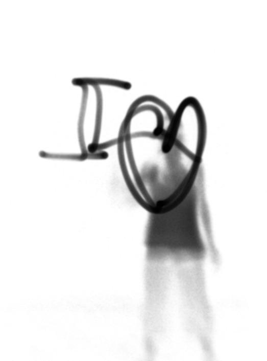
Nous
55
Le père de Florence voit les écouteurs sur les oreilles,
— Tu n’as pas tes clés ?
Les écouteurs sur les oreilles, Florence n’a pas entendu son
père et reste immobile, le dos appuyé contre la rambarde des es-
caliers et le visage tendu vers le soleil. Ses yeux sont fermés et sa
tête bat la mesure. Paul monte quelques marches et touche le ge-
nou de Florence. Elle sursaute et retire ses écouteurs.
— Tu écoutes ta musique trop fort avec ça. Tu vas devenir
sourde avant l’âge.
— Papa… ne commence pas.
Paul soupire.
— J’ai oublié mes clés, dit-elle en bâillant et en s’étirant.
— Tu oublies tout en ce moment.
Florence suit son père à l’intérieur de la maison.
— C’est vrai, Florence. Tu es toujours dans la lune. Je sais que
tu n’es pas obligée de nous raconter ta vie, mais ce n’est pas non
plus interdit de le faire…
— Tiens ! Vous êtes déjà là tous les deux ? lance Sandra, en en-
trant et en s’assoyant sur le canapé pour enlever ses souliers.
Elle se masse les pieds en grimaçant.
— Ça va ? Grosse journée, mon amour ? Et toi ma puce ?
Florence lève les yeux au ciel. Elle a horreur que sa mère l’ap-
pelle « ma puce », un vulgaire insecte.
— En fait, si vous voulez savoir, ça ne va pas du tout !
balance-t-elle.
Sandra cesse de se masser les pieds et regarde Paul. Elle sent
que ce qui va sortir de la bouche de sa fille risque de faire des
dégâts.
— Raphaëlle est gaie. Elle aime les filles, si vous préférez. Elle a
même couché avec une fille, si vous voulez encore plus de détails.
56
Florence reste debout face à ses parents, devenus livides. Paul
porte la main à son estomac et fait la grimace. Florence les regar-
de à tour de rôle et se dit qu’il faut finir ce qu’elle a commencé.
— Et si vous voulez vraiment, mais vraiment tout savoir, il
se peut, mais je n’en ai pas encore la certitude, que je sois com-
me elle.
Sandra lève la main, comme le ferait une écolière.
— Ho là ! Ne va pas trop vite, ma chérie…
— Je ne vais trop vite, maman ! Je te dis juste que je suis peut-
être lesbienne. C’est pas super drôle à entendre, mais dites-vous
que ça l’est encore moins pour moi de le dire.
— Florence, ce n’est pas parce que Raphaëlle aime les filles, ce
qui ne m’étonne pas du tout en passant, vu comment elle était
avec toi, que tu es nécessairement comme elle. Il se peut très
bien…
— Maman ! Tu peux écouter ce que je dis pour une fois ?
— Sandra, Flo a raison. Laisse-la parler… intervient Paul, effon-
dré sur le canapé.
Sa mère enfouit son visage dans ses mains et tente de se calmer.
Après une dure journée de travail, les aveux de sa fille sont la
goutte d’eau qui fait déborder le vase. Elle aimerait être ailleurs,
sur une plage à Cuba ou dans un chalet au fin fond de la forêt. Plus
de stress, plus de problèmes. Rien que du calme partout autour
d’elle. Elle inspire profondément et regarde Florence, sa grande
fille de 16 ans. Que faire ? Elle ne le sait pas.
— Maintenant que vous savez pourquoi je ne vais pas bien
depuis quelques semaines, ce qui me ferait vraiment plaisir,
c’est que vous gardiez ça pour vous deux. Je n’ai pas envie que
Thomas et les grands-parents soient au courant. Pas tout de suite.
C’est trop confus encore pour moi.
57
Il est inutile d’ajouter quoi que ce soit. Ses parents sont en état
de choc. Elle n’a plus qu’une envie, retourner chez Raphaëlle.
— Je suis désolée, mais là, il faut que je sorte. On en reparlera
une autre fois, dit-elle en prenant la direction de la porte.
— Florence ! Flo ! Ne t’en va pas comme ça ! entend-elle derriè-
re son dos.
Elle se sauve, avant que cet élan de courage ne la quitte. Elle
marche d’un pas décidé jusqu’à l’appartement de Raph. Elle son-
ne et se retrouve devant celle qu’elle est bien décidée à ne plus
fuir.
— Raph, excuse-moi pour l’autre jour… Maintenant je suis prê-
te. Je veux tout savoir, tout entendre.
Raphaëlle soupire et l’entraîne jusqu’à la cuisine. Elle semble
soulagée de la revoir.
— Tu veux boire quelque chose ?
— Non, merci, ça va. Je ne veux rien.
Florence ébouriffe ses cheveux. Raphaëlle sourit.
— C’est super ta coupe de cheveux !
— Tu trouves ? Tu es bien la seule qui trouve ça beau !
Raphaëlle s’assoit près d’elle.
— T’es certaine de vouloir connaître la suite ? demande-t-elle.
Florence serre les lèvres et hoche la tête. Raphaëlle reprend
donc son récit là où elle l’avait interrompu quelques jours
auparavant.
— Un jour est arrivé ce qui devait arriver : la mère de Mary nous a
surprises en train de nous embrasser. Elle a téléphoné à mon
père, qui a téléphoné à ma mère. Personne ne savait plus quoi fai-
re de nous. Mon père m’a posé dix mille questions auxquelles je
refusais de répondre. Ma mère a voulu me récupérer à Stockholm,
accusant mon père d’être incapable de gérer la situation. Mary a
juré à sa mère que c’était moi qui l’avais entraînée dans cette
58
histoire et qu’elle était certaine d’aimer les garçons. Elle a menti
pour rassurer sa mère. Elle m’a trahie et j’étais furieuse. Je ne la
croyais pas aussi lâche. Moi, j’ai avoué la vérité. J’ai dit que j’aimais
Mary. J’étais prête à en assumer toutes les conséquences. J’aurais
même pu fuguer avec elle pour éviter qu’on nous sépare. Mais elle
n’a rien fait pour nous. Sa mère l’a changée d’école et lui a interdit
tout contact avec moi. Elle a averti mon père que si elle me re-
voyait tourner autour de sa fille, elle ne répondait pas de ses ac-
tes… Mon père l’a traitée de vieille réactionnaire. Si tu savais
comme ça m’a fait du bien que mon père prenne ma défense ! Je
n’arrêtais pas de pleurer et lui, il était toujours là pour moi. Au dé-
but, il ne savait pas trop comment en parler avec moi, mais il m’a
dit qu’il acceptait que je sois différente. Je l’ai supplié de rentrer à
Montréal. J’étouffais là-bas. La chose s’était ébruitée à l’école.
Tout le monde ricanait dans mon dos et me pointait du doigt.
Mes oreilles ont entendu des choses horribles ! Je ne peux même
pas te les répéter…
Raphaëlle s’est tue. Elle renverse la tête et fixe le plafond imma-
culé de la cuisine. Elle se sent vidée, délivrée d’un poids trop lourd
pour ses épaules. Le temps semble s’être arrêté. Florence hésite,
puis pose la main sur le bras de son amie.
— Raph…
Une voiture klaxonne dans la rue. Florence sursaute et retire sa
main, comme si elle avait reçu une décharge électrique.
— Zut ! C’est mon père. Je vais devoir y aller, annonce Ra-
phaëlle, nous partons à la campagne pour deux jours.
Elle se lève, déçue de devoir partir à un tel moment. Sans hési-
ter, elle prend la main de Florence.
— Florence, je suis toujours la même. Je veux dire, même si
j’ai couché avec une fille, à l’intérieur, c’est toujours la même
Raphaëlle qui est là…
59
— Je sais ! Ne t’en fais pas. Je sais tout ça.
Un nouveau coup de klaxon se fait entendre.
— Bon… il faut que j’y aille. On se revoit rapidement, OK ? Il faut
vraiment qu’on se revoie !
Florence hoche la tête et accompagne Raphaëlle jusqu’à la voi-
ture de son père. Un peu mal à l’aise, elle se penche vers la portière
pour le saluer.
— Florence ! Wow ! Tu as changé ! s’exclame-t-il, content de re-
voir la meilleure amie de sa fille.
Florence devient rouge jusqu’aux oreilles et tente de sourire.
— Ben… Bonne route alors…
Florence s’éloigne de la voiture, les deux mains enfouies dans
les poches kangourou de son pull.
— Merci ! J’espère que nous ramènerons des gros poissons ! Si
c’est le cas, on t’invitera à les manger avec nous ! Ça me ferait plai-
sir de te revoir traîner chez nous, comme dans le bon vieux temps !
Florence se gratte le cuir chevelu. « Le bon vieux temps ». L’ex-
pression employée par Yves lui fait chavirer le cœur. Il y a tou-
jours une faille, une fissure par laquelle le temps fout le camp
avec le bonheur sous le bras. Le temps passe, les choses chan-
gent, les gens se perdent et parfois se retrouvent.
— Ben, ouais, pourquoi pas ? bafouille-t-elle.
Elle jette un coup d’œil vers Raphaëlle et la voit sourire. « Elle
est toujours aussi belle », pense-t-elle, en devenant rouge comme
une pivoine.
La voiture démarre. Florence est à la fois déçue et soulagée de
voir partir son amie avant d’avoir pu lui parler de ce qu’elle ressent.
Elle soupire et prend le chemin de la maison. Elle marche d’un air
distrait, enfermée dans sa bulle. Elle est insensible à ce qui se
passe autour d’elle. Elle pense à Raph, à son visage, à la douceur
de sa main dans la sienne. « On dirait que je suis amoureuse »,
60
se dit-elle. Cette pensée la bouleverse et elle a du mal à retenir les
larmes qui lui montent aux yeux.
En entrant chez elle, elle est heureuse de voir qu’il n’y a person-
ne. Ses parents sont sortis. Elle monte dans sa chambre et ouvre
son ordinateur. Dans sa boîte de courriels, il y a trois messages
d’Andy. Sur le premier, apparaît une photo de lui, tenant une affi-
chette sur laquelle est écrit : PARDONNE-MOI ! Dans le deuxiè-
me, encore une photo de lui : il est torse nu et a marqué sa poitrine
au feutre noir d’un gros EXCUSE-MOI ! Puis finalement, dans le
dernier, Andy n’a écrit qu’une petite phrase en lettres rouges :
Bonnie and Clyde ont besoin de toi. Florence sourit et s’installe
devant sa webcam. Elle tient un bout de papier sur lequel est ins-
crit : OK. Bonnie revient.
9 juil et
Je reviens d’une super pratique avec les gars ! Pour la première
fois ce soir, nous avions vraiment l’impression d’être un groupe,
un vrai ! Il y a longtemps que je n’avais pas joué aussi bien. On dirait
que le fait d’avoir revu Raphaël e a libéré quelque chose de positif
en moi. Quel e journée ! J’ai pu parler à mes parents, j’ai vu Raph et
j’ai fait la paix avec Andy ! Si on m’avait dit ce matin au réveil que
j’arriverais à faire tout ça, je ne l’aurais pas cru. Je me sens soula-
gée. Bien des choses restent encore floues et compliquées, mais
au moins j’ose al er de l’avant. Je me demande comment vont mes
parents. Quand je suis rentrée, j’ai trouvé une note sur le frigo. Ils
sont al és manger au restaurant. Ils devaient avoir bien des choses
61
à se raconter, parce qu’il est minuit et ils ne sont toujours pas ren-
trés. Ce qui m’arrange plutôt… Je n’avais pas envie de reprendre la
discussion. Je pense que j’ai gâché leur fin de semaine avec mon
coming out. . Mais c’est fou le bien que ça m’a fait de leur parler.
Tout d’un coup, je me suis sentie plus forte. Tel ement forte que j’ai
pu courir jusque chez Raphaël e ! Dommage que son père soit ar-
rivé si tôt. Je pense que j’étais prête à tout lui raconter. En même
temps, ce moment me fait tel ement peur ! Une fois que j’aurai
avoué à Raph que j’ai déjà eu envie de l’embrasser, je me demande
ce qui va se passer. Je suis peut-être seulement une amie pour
el e ? J’ai peur de faire une fol e de moi. Pourtant, je connais Ra-
phaël e. Il serait étonnant qu’el e se moque de moi. Ce n’est pas
son genre. J’ai hâte qu’el e revienne, et qu’une fois pour toutes, je
puisse tirer ça au clair !
Tous les membres de la famille sont assis autour de la table. S’il
n’y avait pas le bruit des baguettes qui grattent maladroitement
le fond des assiettes, on pourrait entendre une mouche voler.
Thomas se force pour avaler les sushis qu’a rapportés son père,
mais est incapable de cacher son dégoût.
— T’as bientôt fini de faire le singe ? Si t’aimes pas ça, les sushis,
t’as rien qu’à te faire cuire un œuf ! finit par éclater Florence. Je
n’en peux plus de te voir grimacer !
— Ce n’est pas le poisson cru qui me soulève le cœur, c’est de
manger en face de toi, maudite lesbienne !
— Thomas ! Retire immédiatement ce que tu viens de dire,
hurle Paul, en tapant du poing sur la table.
62
Thomas se lève si brusquement que sa chaise se renverse. Son
visage est écarlate.
— Et pourquoi je n’aurais pas le droit de dire ce que je pense ?
Vous croyez que c’est drôle pour moi d’avoir une sœur qui couche
avec une fille ? Quand ça va se savoir à l’école, tout le monde va
rire de moi. Je n’ai pas envie de passer pour une tapette moi
aussi !
— Thomas, rassieds-toi tout de suite, ordonne Sandra.
— Comment ça se fait qu’il est au courant de ça, lui ? Je vous
avais dit de ne pas en parler à personne, s’énerve Florence.
Après, vous vous demandez pourquoi je ne vous raconte jamais
rien !
Florence se lève et file s’enfermer dans sa chambre. Paul jette
un regard furieux à son fils et va trouver sa fille.
Thomas a remis sa chaise sur ses quatre pattes et s’est rassis à
table. Il regarde les deux bouchées de poisson cru qui restent au
fond de son assiette et aurait envie de les lancer contre le mur.
Sandra s’approche de lui et cherche à enlacer ses épaules. Thomas
bougonne et évite l’étreinte de sa mère.
— Chéri, il va falloir que tu sois un peu plus délicat avec ta sœur.
Tu imagines comme c’est difficile et compliqué pour elle en ce
moment ?
— Elle m’énerve. Elle gueule toujours après moi. Je la déteste
autant qu’elle me déteste. Et je n’ai pas envie qu’en plus elle soit
lesbienne. C’est tout ! Et puis, vous prenez toujours sa défense !
— Ça, ce n’est pas vrai…
— Oui c’est vrai ! beugle Thomas.
Sandra soupire et se masse les tempes. « Vivement qu’ils soient
majeurs et qu’ils déguerpissent tous les deux de la maison »,
pense-t-elle, lasse de ces perpétuels conflits qui explosent sous
son toit.
63
10 juil et
Mon frère me tue. Pourquoi il a fal u que j’hérite du frère le plus
crétin de la Terre ? Si je pouvais, je lui ferais boire de l’eau de vais-
sel e et manger des vers de terre par le nez. Après ce qu’il a dit ce
soir à mon sujet, j’ai décidé de ne plus jamais lui adresser la parole.
À la guerre comme à la guerre ! Mes parents auront beau me sup-
plier, je ne plierai pas. J’en ai ras le bol de lui. J’ai déjà assez de mes
problèmes sans que mon frère vienne en rajouter une couche. Je
ne suis pas encore sûre à cent pour cent d’être gaie, mais j’ai pres-
que envie de l’être juste pour l’énerver…
Après la crise de mon frère, mon père est venu me voir. Depuis le
retour de Raphaël e, il est plus cool avec moi. Il n’arrête pas de me
proposer de faire des choses avec lui. Al er au cinéma, au resto, à
la piscine… Je vois bien qu’il cherche par tous les moyens à se rap-
procher de moi et si j’avais la tête un peu moins dans la brume,
j’aimerais ça aussi me rapprocher de lui. Quand j’étais petite, on
était très complices lui et moi. Hier, quand il était avec moi dans ma
chambre, il m’a demandé si j’avais revu Raphaël e. Je lui ai dit que
oui et, là, un énorme soupir est sorti de son corps. On aurait dit un
bal on de plage qui se dégonfle. Je pense qu’il a vraiment peur qu’il
se passe quelque chose de concret avec Raphaël e. Je ne me sen-
tais pas super à l’aise, moi non plus. Il m’a demandé d’excuser mon
frère. Il m’a dit qu’il faudrait peut-être un peu de temps à tout le
monde dans la famil e pour se faire à ma nouvel e vie. « Nouvel e
vie » ! L’expression me fait rire ! Moi j’ai plutôt l’impression de
commencer ma vie. Pas une nouvel e, juste la mienne, cel e qui
m’appartient et que personne ne peut vivre à ma place. Je ne sais
pas pourquoi, mais on dirait qu’Andy, Carl, mes parents, mon frè-
re, ils sont tous persuadés que je suis homo avant que j’en aie
64
moi-même la certitude. J’ai peut-être une étiquette avec écrit
dessus 100 % gaie dans le dos ? Chose certaine, j’aimerais bien
qu’on me fournisse le manuel d’instruction qui va avec ma situa-
tion. Je me sentirais un peu moins perdue. Ma mère m’a dit qu’el e
s’en doutait depuis longtemps pour Raphaël e. Moi, jamais je
n’aurais osé imaginer que Raph avait des pensées aussi bizarres
que les miennes. Je croyais être seule. Nous étions deux.
La nuit dernière, comme je n’arrivais pas à dormir, j’ai surfé sur le
Net. J’ai trouvé des sites qui traitent d’homosexualité et j’ai lu des
choses pas très rigolotes. Par exemple, aux États-Unis, 4 étudiants
homosexuels sur 5 disent avoir été agressés verbalement en rai-
son de leur orientation sexuel e, et 9 sur 10 disent entendre régu-
lièrement des remarques homophobes. Il paraît que les jeunes
gais font plus de dépressions et de tentatives de suicide… Après
deux heures de lectures aussi gaies (excusez le mauvais jeu de
mots. .), je me suis jetée à plat ventre sur mon lit, j’ai attrapé mon
oreil er et j’ai pleuré toutes les larmes de mon corps. Je pleurais
parce que j’ai compris ce qu’avait dû subir Raphaël e à Londres.
Les remarques horribles, les insultes, le rejet… Pauvre Raphaël e,
ma Raphaël e… Et l’autre, la Mary, incapable de faire face et qui l’a
lâchement abandonnée ! Si je la croise un jour, je pourrais lui cra-
cher au visage ! J’ai hâte de revoir Raphaël e. J’ai hâte de lui parler
de moi, de ce qui mijote en moi. Il faut que j’arrive à lui dire ce que
je ressens et que je pense sans cesse à el e. Il faut que j’aie le cou-
rage de lui avouer qu’el e n’est pas seule, que je suis là, moi, son
amie de toujours, son reflet dans le miroir. Je ne suis pas comme
Mary. Je ne suis pas le genre à me dégonfler à la première difficul-
té. Aïe… Me voilà qui parle comme une fil e amoureuse… Ce soir, je
me sens gaie. Demain matin, est-ce que cette impression sera tou-
jours là, au creux de mon ventre ?
65
— Florence ! J’espère que tu ne viens pas pour le poisson, la pêche
a été désastreuse ! Deux petites truites de rien du tout. À peine de
quoi nourrir un chat ! Entre, ne reste pas plantée là. Raphaëlle ! Tu
peux descendre ? Il y a Florence qui est là pour toi ! s’écrie Yves.
Florence lève les yeux et aperçoit Raphaëlle en haut des esca-
liers, qui lui fait signe de monter. Florence voudrait sourire, mais
ses lèvres refusent d’obtempérer. Son cœur s’agite dans tous les
sens, comme un oiseau qui voudrait sortir de sa cage. Elle suit
Raphaëlle jusqu’à sa chambre. Il n’est plus possible de faire de-
mi-tour. Elle est seule face à Raphaëlle. Il faut tout lui avouer. En
entrant dans la chambre, elle remarque le poster de John Lennon
et Yoko Ono derrière la porte et celui du groupe Evanescence au-
dessus de la table de travail. Avant son départ à Londres, elles
écoutaient en boucle l’album Fallen. Raphaëlle est toujours fan
d’Amy Lee. Elle voit aussi la nouvelle guitare de Raphaëlle, une
superbe Gibson Les Paul. Sur son lit sont étalées diverses parti-
tions. La musique fait encore partie de la vie de Raphaëlle, et Flo-
rence s’en réjouit. Les mois ont passé, mais elles semblent être
encore sur la même longueur d’onde.
— Avec Andy, mon meilleur copain, on est en train de monter
un groupe. Tu sais, j’ai fait des gros progrès à la guitare.
Raphaëlle sourit et s’assoit en tailleur sur son lit. Florence hé-
site un court instant et la rejoint.
— Wow ! C’est super ! Tu me le présenteras, Andy ? C’est tou-
jours cool de rencontrer des gens qui font de la musique.
— Bien sûr ! Tu vas voir, c’est un super musicien. Et il est génial !
— Alors tu le trouves toujours aussi adorable ? Il est toujours
juste un copain pour toi ? demande Raphaëlle d’une voix un peu
tendue. Tu n’arrêtais pas de m’en parler quand je suis arrivée à
Londres. J’étais persuadée que vous alliez finir ensemble.
66
Florence se laisse tomber à la renverse sur le lit. Elle sourit.
— Non. Il ne s’est jamais rien passé entre nous. Il ne m’attire
pas. En fait, si tu veux tout savoir, je crois que les garçons ne m’at-
tirent pas. Jusqu’à ce que tu me racontes ce qui s’est passé à Lon-
dres, je croyais que c’était un problème. Maintenant je comprends
que c’est un ÉNORME problème.
Florence fixe le plafond et n’ose pas regarder Raphaëlle, qui
s’allonge à ses côtés. Elle sent la chaleur de son corps et la pré-
sence de sa main, à quelques millimètres de la sienne, à plat sur
la couette. Elle ferme les yeux et étire lentement son auriculaire
jusqu’à toucher celui de son amie. Elle caresse le bout de son on-
gle et remonte le long de son doigt. Raphaëlle déplace alors
sa main et la pose sur celle de Florence. Des écureuils se dispu-
tent en lançant des cris stridents dans la ruelle. Ils se taisent su-
bitement quand des enfants passent en bicyclette en chantant
à tue-tête : « Au clair de la lune, j’ai pété dans l’eau. » Raphaëlle
se met à rire.
— Tu te souviens quand nous avions huit ou neuf ans ? Nous
aussi on s’amusait à changer les paroles des chansons.
Florence sourit. Elle s’en souvient comme si c’était hier.
— On disait n’importe quoi et on se trouvait tellement drôles !
Le mieux, c’était quand on chantait en anglais sans savoir ce
qu’on racontait ! Tes parents nous disaient d’aller chanter plus
loin parce qu’on leur cassait les oreilles avec nos niaiseries !
Raphaëlle tourne la tête et Florence fait de même. Leurs yeux
se rencontrent, se retrouvent. Les sourires s’évanouissent et la
peur revient sur leurs visages. Il y aurait tant de choses à dire.
« Par où commencer ? » se demande Florence en accueillant la
paume de son amie sur sa joue.
— Raphaëlle, tu m’as tellement manqué. Si tu savais comme je
t’en ai voulu de m’avoir laissée tomber ! Et tu sais quoi ? Je pense
67
que je t’en veux aussi parce que ce n’est pas Mary qui aurait dû
être ta première blonde…
Florence étire le cou et colle son front contre celui de Ra-
phaëlle. Des tremblements s’emparent de son corps, comme si
elle avait une vilaine fièvre. La peau de Raphaëlle. Son odeur, sa
chaleur, sa douceur. Le souffle de Raphaëlle caresse ses lèvres,
comme une brise d’été, un agréable vent venu du sud en plein hi-
ver. La bouche de Raphaëlle est faite de soie, sa langue de velours.
Un premier baiser vient de naître. Une grandiose première fois
qui restera à jamais gravée dans leurs mémoires. Florence vient
d’embrasser une fille et se dit que ce n’est pas si différent d’avec
un garçon, à part la douceur de la peau.
Elle réalise alors que Raphaëlle ne l’a à vrai dire jamais quittée.
Tout ce temps, elle était là, au plus profond de ses entrailles, ca-
chée derrière des montagnes de questions et de déceptions. Flo-
rence a ravalé son amitié et son amour pour Raphaëlle pendant
des mois. Elle a voulu croire que son amie avait glissé dans le
monde de l’oubli, qu’elle avait disparu de sa chair. Elle sait main-
tenant qu’elle a continué de respirer après son départ seulement
pour vivre ce moment unique. Être avec Raphaëlle, lui apparte-
nir, tout lui donner. Il n’y a plus lieu de se voiler la face. Une his-
toire commence ou plutôt peut continuer.
— Raphaëlle, je crois que je t’aime depuis toujours.
Florence pose sa tête sur la poitrine de Raphaëlle. Le contact
de sa joue contre ses seins la réconforte. Elle ferme les yeux et
laisse les doigts de Raphaëlle s’emmêler dans sa chevelure.
— Si tu savais le nombre de fois que j’ai embrassé Mary en
m’imaginant que c’était toi qui étais là, près de moi. Je croyais que
j’étais stupide de rêver à ça. Je ne pensais pas que l’amour pouvait
être possible avec toi, mon amie de toujours. Il me semblait im-
possible que tu éprouves les mêmes sentiments que moi. Je me
68
sentais tellement à part, si différente des autres.
— Si tu veux faire quelque chose de gentil pour moi, Raphaëlle,
ne prononce plus le nom de cette… de cette fille devant moi ! Si je
le pouvais, j’irais tout de suite à Londres l’étriper de mes propres
mains !
Raphaëlle se met à rire et repousse Florence pour mieux la re-
garder. Elle se cale à la même hauteur sur l’oreiller.
— T’en fais pas. Je n’aime plus Mary et je n’ai plus envie de pen-
ser à ça. Je suis là, tu es là et je crois que c’est le plus beau jour de
ma vie !
26 juil et
Voilà deux semaines que Raphaël e et moi sommes ensemble et je
dois avouer que ce n’est pas tous les jours facile à assumer… La
première fois que nous nous sommes embrassées, quand je suis
sortie de chez el e, j’avais l’impression que ça se voyait sur mon vi-
sage et j’étais super mal à l’aise. J’ai couru jusqu’à la maison et j’ai
passé une nuit blanche à penser à ce qui venait de se produire. Dès
que je fermais les yeux, je revivais ce premier baiser et j’avais l’im-
pression que Raphaël e était là, tout près de moi dans mon lit.
Comme je n’arrivais pas à dormir et que j’avais soif, je me suis
levée au milieu de la nuit et j’ai croisé mon père, assis dans la cui-
sine devant une tartine de beurre d’arachide. Il a eu l’air content
de me voir arriver. Il faut dire que manger tout seul dans le noir à
trois heures du matin, ce n’est pas fol ement amusant. Et puis moi
aussi j’étais contente de me retrouver seule avec lui. Depuis le
69
clash avec mon frère, il y a beaucoup de tension à la maison et j’ai
l’impression que tout le monde cherche à s’éviter. J’ai pris le litre
de jus d’orange qui traînait dans le frigo et je me suis assise face à
lui. Il m’a souri et m’a dit que j’avais hérité de son horloge biologi-
que. Comme lui, j’aime trop la nuit pour la passer à dormir. On a
parlé un peu de musique. Il est super fier de moi parce que je me
défends bien à la guitare. Je pense que je réalise un de ses vieux
rêves. Mon père aurait aimé jouer d’un instrument, mais il n’avait
pas du tout l’oreil e musicale. Il faut croire que je tiens ce don de
ma mère… Ensuite, il m’a demandé comment j’al ais et tout de suite,
je lui ai dit que je sortais avec Raph. Heureusement qu’il faisait noir,
parce que j’ai dû rougir jusqu’aux oreil es en lui avouant. Un
moment, j’ai cru qu’il al ait s’étouffer avec son beurre d’arachide,
mais non, il a avalé sa bouchée et m’a simplement dit : « OK. C’est
ton choix. » J’ai aussitôt répliqué que je ne croyais pas que j’avais
« choisi » d’aimer Raphaël e, mais que c’était plutôt une évidence,
quelque chose de plus fort que moi. Il m’a regardée droit dans les
yeux, les sourcils froncés et a mis plusieurs minutes avant d’ajou-
ter qu’il ne savait pas si on choisit d’être gai ou si on naît comme ça,
mais que ce n’est pas le chemin le plus facile et que quoi qu’il arri-
ve, il serait là pour moi.
Il s’est levé et en passant derrière moi, il a mis ses mains sur mes
épaules et m’a embrassée sur la tête. Ensuite il est monté se cou-
cher. Je suis restée un moment seule dans la cuisine à digérer ce qui
venait de se passer. Je crois que jamais je n’ai été aussi fière d’être la
fil e de mon père.
Le lendemain, j’ai vite compris que mon père avait parlé à ma mère.
Vu l’état de ses yeux, je crois qu’el e a dû beaucoup pleurer et pas
beaucoup dormir. Pauvre maman… Raphaël e dit qu’il faut lui
70
laisser le temps d’accepter la chose. Mon Dieu… J’ai comme l’im-
pression que « la chose » en question n’a pas fini de m’en faire voir
de toutes les couleurs… Mes grands-parents n’ont pas encore été
mis au courant et je ne sais pas s’ils verront ça d’un très bon œil.
Quant à mon crétin de frère, il a peur de se laver dans la même bai-
gnoire que moi par peur d’attraper ma « maladie ». Je tiens bon, je
ne lui ai toujours pas adressé la parole depuis qu’il m’a traitée de
maudite lesbienne ! Il n’y a que mon père qui semble bien
vivre « la chose ». Du moins, en apparence. Dans le fond, je pense
qu’il stresse à mort à cause de moi. Son ulcère d’estomac est là
pour en témoigner. Et quand je pense à l’école qui va bientôt
recommencer, je me ronge les ongles jusqu’au sang. J’ai beau faire
promettre à tous ceux qui le savent de ne rien dire, j’ai peur que la
nouvel e s’ébruite et de vivre ce qu’a vécu Raph à Londres. Pour-
quoi ne serait-il pas possible de vivre notre relation au grand
jour, comme le commun des mortels ? Quand Andy sortait avec
Chloé, tout le monde les trouvait super mignons. Raphaël e et moi,
si nous nous embrassions à la sortie de l’école, je n’ose même pas
imaginer ce qui se produirait.
Avec Raphaël e, on n’arrête pas de chercher des sites ou des arti-
cles sur Internet. Si ça continue, nous al ons devenir deux expertes
de l’homosexualité ! Son père nous a offert la saison 1 de la télésérie
américaine « L Word ». Nous avons regardé tous les épisodes en
deux jours. C’est tel ement rare de voir des fil es s’embrasser dans
des films ou à la télé ! Son père nous a dit qu’il al ait nous acheter
les autres saisons. On dirait que c’est plus fort que moi. J’ai envie
de voir d’autres fil es comme moi, comme nous. Peut-être que
c’est pour me rassurer… J’aime bien Yves. Il est à l’aise avec nous.
Je crois même qu’il est content que Raphaël e sorte avec moi. Il me
connaît bien et il sait que je ne suis pas une mauvaise fil e.
71
Je n’en reviens pas de tout ce qui a changé dans ma vie en quel-
ques mois. J’ai l’impression d’avoir vieil i de 10 ans d’un seul coup.
Marjolaine m’a dit qu’être différent des autres faisait gagner en ma-
turité. Je pense qu’el e a raison. Je ne veux pas paraître prétentieu-
se, mais je sens bien que j’ai une longueur d’avance sur les autres
jeunes de mon âge. D’ail eurs, en dehors d’Andy et de Raphaël e,
je n’ai pas envie de perdre mon temps avec des 15-16 ans. J’ai tel e-
ment hâte d’en finir avec ma dernière année de secondaire et d’être
au cégep !
Affalé sur le canapé, les pieds sur la table basse, Andy bâille
toutes les cinq minutes. Il a fait la fête toute la nuit avec Carl. La
tête de Florence repose sur sa cuisse. Elle regarde le vol chaotique
d’une énorme mouche qui se heurte à tout ce qu’elle rencontre.
— T’as couché avec Chloé ? lui demande-t-elle, à brûle -
pourpoint.
La respiration d’Andy se bloque. Il n’est pas sûr de vouloir ré-
pondre à la question.
— C’était comment ? continue Florence sans attendre de
réponse.
Andy repousse la tête de Florence et se redresse.
— J’ai couché juste une fois avec elle et j’ai dû être vraiment nul
parce qu’elle m’a laissé deux jours plus tard. C’était la première
fois pour moi… J’étais super stressé…
— Pff ! Je pense plutôt que c’est elle la grosse nulle !
Florence donne un coup d’épaule complice à Andy.
— Et toi ? T’as couché avec…
72
— Non.
Florence ne laisse pas le temps à Andy de terminer sa question.
— Pas encore. Tu dois trouver que je ne suis pas très
dégourdie ?
— Non. Je ne trouve pas ça. Chacun son rythme…
Andy est visiblement mal à l’aise. Il se lève et sautille sur place
pour se réveiller. Il voudrait changer de sujet de conversation.
— Bon ! Tu viens à la piscine avec moi ?
Florence ignore sa dernière question.
— Andy, j’aime Raphaëlle. Je l’aime et j’ai super envie de cou-
cher avec elle. Est-ce que tu trouves que je suis anormale à cause
de ça ?
— Ben là ! Arrête avec ça ! On en a déjà parlé dix fois ensemble.
Tu préfères les filles et puis c’est tout. Tu seras toujours la même
Flo. Enfin pour moi, tu seras toujours la même…
Florence se lève à son tour et tire Andy par son t-shirt pour l’em-
brasser sur la joue.
— Chloé te méritait vraiment pas !
1 e raoût
Je viens de passer la plus extraordinaire journée de toute ma vie !
Le 31 juil et restera gravé à tout jamais dans ma mémoire.
Yves nous a amenés à la pêche. Il a loué un chalet près d’un lac
et a tenu à ce qu’Andy nous accompagne. Je crois qu’il avait envie
d’avoir un gars à ses côtés. Au début, Andy ne semblait pas très
73
à l’aise, mais il a finalement accepté de venir avec nous. Dans la voi-
ture, il s’est assis en avant avec Yves et ils ont vite sympathisé tous
les deux. En arrivant au chalet, on a préparé le repas tous ensemble
et c’était génial parce que tout le monde riait et faisait des blagues.
Je me sentais sur une autre planète ou plutôt sur la bonne planète,
cel e qui me ressemble et dont je rêve depuis des années. Je ne me
souvenais pas que le père de Raphaël e était aussi drôle. Raphaël e
m’a dit qu’il avait beaucoup changé depuis son divorce, qu’il était
plus disponible pour el e. Quelquefois sa mère lui manque, mais
el e préfère vivre ici avec Yves et depuis que nous sommes ensem-
ble, il est hors de question qu’el e parte à Stockholm. Nous nous
sommes juré que plus personne n’arriverait à nous séparer. Une
fois nous a suffi…
Après le souper, on a fait un feu de camp au bord du lac et on a
chanté et joué de la guitare. Yves est rentré se coucher vers minuit,
mais Andy, Raphaël e et moi, nous sommes restés dehors très
longtemps. Pendant ces quelques heures, on a dû refaire le monde
au moins quatre fois ! Andy nous a raconté que Chloé disait à tout
le monde qu’il était nul au lit. Cette petite garce va sûrement nous
faire des misères si l’histoire de notre relation vient jusqu’à
ses oreil es… Andy avait l’air content de parler avec Raphaël e. Je
pense qu’il l’apprécie vraiment et ça me fait trop plaisir. D’autant
plus qu’on a décidé qu’el e serait la chanteuse de Bonnie and Clyde !
La première fois qu’el e est venue pratiquer avec nous et que je l’ai
entendue chanter « Bring Me to Life » d’Evanescence, il ne restait
plus qu’une petite flaque de Florence par terre à la fin de la chan-
son. J’étais tel ement fière que cette fil e soit ma blonde ! Carl et
Andy se sont regardés, bouche bée. Ils n’en revenaient pas de la su-
per voix de Raphaël e. Nous quatre ensemble, on va tout faire ex-
ploser, c’est certain !
74
La nuit avançait, Andy a senti qu’il était de trop et il a filé au lit.
Raphaël e et moi avons éteint ce qui restait de feu et sommes mon-
tées dans une cabane derrière le chalet. Je crois qu’en temps nor-
mal, c’est une cache pour les chasseurs. Enfin, nous, les orignaux et
les chevreuils étaient le dernier de nos soucis… Cette cabane était
parfaite ! Juste assez grande pour nous deux. Pour la première fois,
j’ai vu le corps de Raphaël e entièrement nu. On a passé je ne sais
pas combien de temps à se regarder et à se caresser. Au début,
j’étais hypernerveuse, mais c’était tel ement bon que je me suis vite
détendue. Raphaël e m’a dit qu’il fal ait que j’ail e à mon rythme,
que je ne me sente pas obligée de rien. Finalement, les choses se
sont faites sans que j’aie à réfléchir. Je suis tel ement bien dans ses
bras ! Je ne sais pas si je suis vraiment gaie, mais je suis certaine
d’aimer Raphaël e, c’est déjà un début. On a fini par s’endormir dans
les bras l’une de l’autre. Ce sont les piqûres de moustiques qui nous
ont réveil ées. Nous étions tel ement bien que nous n’avons pas re-
marqué que les maringouins aussi profitaient de toute cette bel e
peau dénudée. Inutile de dire qu’ils s’en sont donné à cœur joie !
Quand nous sommes retournées vers le chalet, Yves était déjà
au bord du lac en train de donner un cours de pêche à Andy. Le
pauvre ! Il n’avait pas l’air très réveil é. . Mais il s’est rapidement
laissé prendre au jeu et, après Yves, c’est lui qui a attrapé le plus
de poissons. Faut dire que Raph et moi, nous n’avions pas trop la
tête à la pêche. Moi je n’arrivais pas à penser à autre chose qu’à la
nuit qui venait de passer et j’en avais des frissons sur tout le corps.
Je ne sais pas comment c’est avec un garçon, mais avec Raphaël e,
c’était au-delà de mes espérances. Trop envie de recommencer !
75
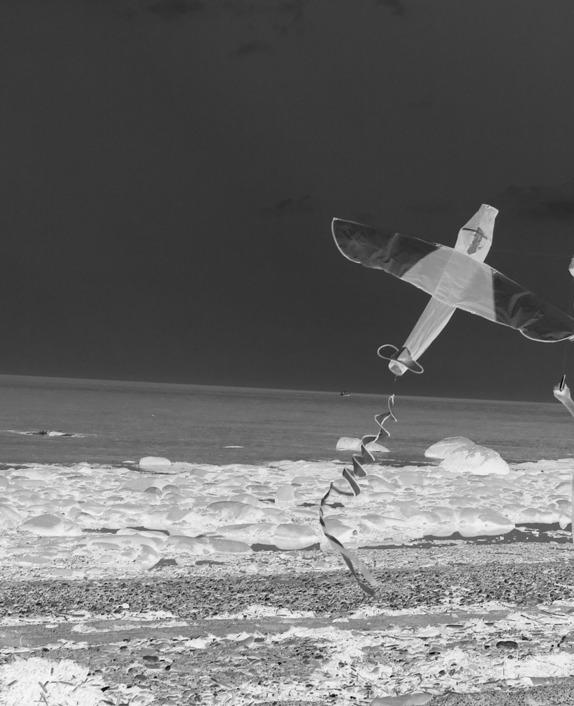
La voiture s’immobilise devant chez Andy.
— Voilà, jeune homme ! Je suis content de t’avoir amené avec
nous ! Je me serais senti un peu seul sans toi.
Yves regarde les deux filles dans le rétroviseur et sourit.
— Ouais ! Ben si tu retournes à la pêche et que tu cherches un
partenaire sérieux, je suis ton homme !
Yves serre fièrement la main d’Andy et fait ouvrir le coffre de
la voiture. Andy sort prendre son sac et revient s’appuyer contre
la portière.
— Bon ben, les filles, je vous dis à demain au local de pratique ?
— Yes ! s’exclame Raph.
Florence pose la tête sur l’épaule de sa copine et lui sourit.
— Donc, je te dépose chez toi, Florence ? Tu ne changes pas
d’idée ? demande Yves.
— Oui. J’ai promis à mes parents de dormir à la maison ce soir.
Raphaëlle se penche vers Florence et l’embrasse rapidement
sur la bouche.
— On se croirait dans Brokeback Mountain, murmure-t-elle.
Nous revenons de la pêche sans le moindre petit poisson…
Les deux filles pouffent de rire.
2 août
Quand je suis rentrée, bronzée et tout heureuse, ma mère était as-
sise devant l’ordinateur au salon. Mon père était sorti avec des co-
pains et mon frère était déjà au lit. Je lui ai dit bonsoir et
je m’apprêtais à monter rapidement dans ma chambre quand el e
77
m’a demandé de m’approcher. Je n’en avais pas vraiment envie,
mais je l’ai fait quand même. Je me suis assise près d’el e, et là, j’ai vu
qu’el e pleurait. Je ne savais plus où me mettre tel ement j’étais mal
à l’aise… El e a pris ma main dans la sienne et m’a fait lire un article
sur Internet. L’article parlait d’un centre gai et lesbien de Tel-Aviv
qui a été la cible d’une agression d’une extrême violence. Cagoulé
et vêtu de noir, un tueur a surgi vers 23 heures samedi soir dans
une sal e de réunion et a ouvert le feu. Un jeune homme de
26 ans et une adolescente de 17 ans ont été tués sur le coup. Il y
aurait eu une douzaine de blessés, dont cinq dans un état grave.
Parmi les plus légèrement blessés, certains ont refusé de se ren-
dre à l’hôpital, de peur d’être identifiés par leurs proches à qui ils
cachent leur homosexualité. Le tueur a pris la fuite et demeure
introuvable.
J’ai arrêté de lire et j’ai senti une grosse boule se former dans ma
gorge. J’entendais ma mère renifler tout près de moi et je luttais
pour ne pas me mettre à pleurer comme el e. El e a fini par lâcher
ma main et a caressé ma joue. El e m’a dit que la jeune femme avait
le même âge que moi. Qu’el e ne pouvait pas arrêter de penser à la
mère de cette fil e qui venait de mourir ! Que s’il devait m’arriver
quelque chose, el e en deviendrait fol e. Ces quelques paroles de
ma mère ont filé droit dans mon cœur et pour la première fois de-
puis plusieurs années, j’ai eu envie de la serrer dans mes bras. Je l’ai
donc fait. J’ai pris ma mère dans mes bras et nous avons brail é en
chœur pendant quinze bonnes minutes.
Je n’arrêtais pas de penser à ce cinglé qui a volé la vie de cette fil e
dont le seul crime était d’être à cette réunion, dans un centre pour
jeunes gais. El e est morte parce qu’el e était homosexuel e. Ensui-
te, ma mère m’a dit qu’el e acceptait que je vive ma vie, mais qu’el e
78
avait peur pour moi. Peur que je souffre à cause du regard des
autres et qu’on me fasse du mal, physiquement et psychologique-
ment. Je l’ai embrassée sur la joue. Ça aussi, il y avait bien long-
temps que je n’avais pas eu envie de le faire. Je réalise que j’ai quand
même de la chance. Mes parents acceptent ma relation avec
Raphaël e. Ils ne sont pas super à l’aise, mais ils ne cherchent pas
à me faire devenir hétéro.
Au fil des jours, je découvre à quel point ce n’est pas simple d’être
ouvertement homo. Il y a encore plusieurs endroits dans le monde
où l’homosexualité est un crime passible d’emprisonnement et
même de mort. Ici, ce n’est pas il égal. Nous avons les mêmes droits
que les autres citoyens. Mais il arrive trop souvent que des gais se
fassent insulter et même se fassent battre en pleine rue, juste com-
me ça, pour le plaisir de tabasser des tapettes ! Il y a des gens qui
détestent les personnes comme Raphaël e et moi et qui nous
croient dégénérés ou pervers. C’est révoltant et aussi, je dois bien
l’avouer, ça me fait peur. Je comprends que certains restent cachés
toute leur vie au fond du placard. Ce n’est pas évident d’affronter le
regard des autres et la haine qui peut surgir dans leurs yeux. Il va fal-
loir que j’apprenne à être forte, très forte. Parce que mon nom est
Florence Picard et je n’ai pas l’intention de me cacher et de souffrir
toute ma vie parce que j’aime une autre fil e. Je vais peut-être met-
tre un peu de temps avant de l’assumer complètement, mais je sais
qu’un jour, j’arriverai à marcher dans la rue main dans la main avec
Raphaël e.
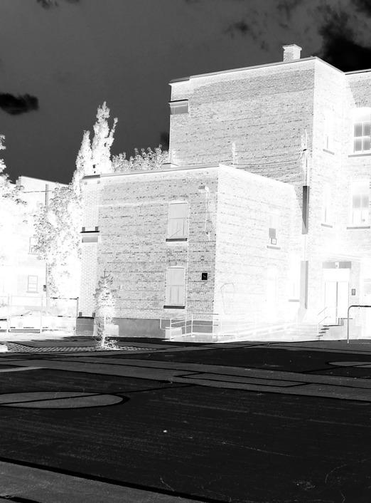
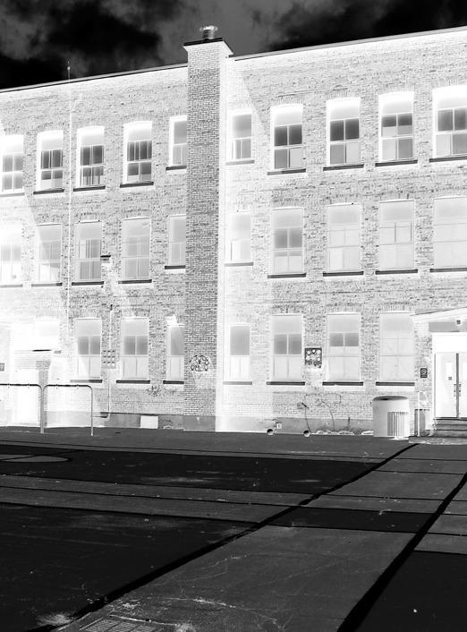
Les autres
Les membres du groupe Bonnie and Clyde ont décidé de pas-
ser le dernier week-end avant la fin des vacances à la campagne,
chez la mère de Carl. Deux jours entiers, juste pour la musique !
Un nouveau membre a rejoint le groupe, Pedro, un ami de Carl. Il
joue du clavier. Au fil des répétitions, l’harmonie s’est créée et le
plaisir de jouer ensemble grandit. Pour l’instant, le groupe se
concentre sur des reprises, mais Andy ne perd pas espoir et il est
sûr qu’un jour, Bonnie and Clyde auront assez d’inspiration pour
écrire leurs propres chansons.
— Je crois que j’ai trouvé ce que je veux faire dans la vie, affirme
Andy. Je vais étudier pour devenir ingénieur du son.
— Pour ça, il va falloir que tu travailles un petit peu plus que
l’année dernière, le taquine Florence.
— T’en fais pas. Tu vas voir, je serai le gars le plus sérieux de
l’école cette année. J’ai décidé de ne plus perdre mon temps à re-
garder les filles.
— Tu ne vas tout de même pas virer tapette ? intervient Carl.
Andy s’approche du batteur et lui donne un solide coup de
poing sur l’épaule.
— Es-tu malade ? Moi devenir fif !
Florence regarde Raphaëlle et soupire. Elle apprécie à moitié la
blague de Carl et le lui fait sentir.
— Les filles, c’est juste une joke. Vous savez bien que je n’ai rien
contre les homos.
Raphaëlle passe son bras autour de la taille de son amie et re-
garde Carl droit dans les yeux.
— Ça va, on sait bien que tu es le spécialiste des farces plates.
On t’aime quand même, dit-elle.
— Ben dis donc, mon vieux, va falloir réfléchir avant de parler
dans ce groupe ! rigole Pedro. Les deux petites n’ont pas l’air
commode !
82
— Bon et si on se remettait à jouer ? propose Andy.
Florence reprend sa guitare et sourit à Pedro.
— Vaudrait mieux avant que la conversation dégénère…
mur mure-t-elle.
24 août
Je suis exténuée. Nous avons passé la fin de semaine à faire de la
musique et à déconner ! Je n’ai presque pas dormi et je n’irai pas
au lit très tard… Raphaël e voulait que je dorme chez el e, mais j’ai
préféré rentrer chez mes parents. Tout va trop vite et j’ai besoin
d’un peu de recul. Je n’ai pas osé dire quoi que ce soit à Raphaël e,
mais je doute beaucoup depuis quelques jours. Je trouve Pedro
super attirant physiquement et ça me trouble. Je suis peut-être
bisexuel e ? Ou peut-être que je suis « Raphaël ienne » au lieu de
lesbienne ? J’aime Raphaël e et je suis attirée par son corps, mais je
ne sais pas si je pourrais faire l’amour avec une autre fil e. J’aurais
besoin de passer quelques jours sans Raphaël e pour réfléchir,
mais je n’ose pas lui en parler. El e a l’air beaucoup plus sûre que moi
de son orientation sexuel e et je crois qu’el e compte beaucoup
sur moi pour affronter la rentrée scolaire. Je capote ! Si seulement
on pouvait zapper cette dernière année avant le cégep ! Mon frère
Thomas n’arrête pas de me dire qu’il fera tout pour ne pas nous
croiser à l’école. Je crois qu’il capote encore plus que nous et je me
demande bien pourquoi. Ils ne vont tout de même pas lui casser
la gueule parce qu’il a une sœur homo ? Quoique… Les gens sont
parfois tel ement stupides. . Tout à l’heure, j’ai passé au moins
83
une heure devant le miroir à me regarder. J’essayais de voir s’il y a
quelque chose sur mon visage ou sur mon corps qui laisserait
paraître que je couche avec Raphaël e. Je me sens différente à
l’intérieur et on dirait que j’ai peur que ça transpire à l’extérieur.
C’est bête, mais c’est comme ça. Je crois que je devrais dormir
avant que tout se complique encore plus dans ma tête.
Florence tente d’apprendre un nouveau morceau à la guitare.
Soudain, un signal sonore lui annonce que quelqu’un vient de se
connecter sur Messenger. C’est sûrement Raphaëlle.
« Tu ne t’es pas branchée hier, en rentrant ? » écrit Raphaëlle.
« J’étais super fatiguée. Je me suis endormie tôt », répond
Florence.
« T’es sûre que ça va ? Tu faisais une drôle de tête dans la
voiture. »
Florence enlève ses mains du clavier. Elle fixe la dernière phra-
se de Raphaëlle sur l’écran et ne se décide pas à répondre.
« Hé ! Tu es toujours là ? »
« J’ai peur, Raphaëlle. Je ne sais plus où j’en suis », tape Floren-
ce, les yeux pleins d’eau.
« Bouge pas, j’arrive », répond rapidement Raphaëlle.
Florence rabat le couvercle de son ordinateur portable et se jet-
te sur son lit. Elle repense à son enfance, à son amitié avec Ra-
phaëlle depuis l’âge de huit ans. Elle prend son journal.
84
25 août
Avant, Raphaël e était ma meil eure amie, je ne me posais aucune
question. Tout était simple, limpide. Depuis quand mes sentiments
pour el e ont-ils changé ? Je me souvient d’une nuit, peu de temps
avant que Raphaël e ne parte pour Londres. Nous avions dormi
ensemble et Raphaël e avait posé sa tête sur mes seins. Un frisson
avait traversé mon corps. Le même frisson qui me traverse
aujourd’hui chaque fois que la peau de Raphaël e frôle la mienne.
Le désir était déjà là. Bien avant que je n’ose me l’avouer, j’étais
attirée par mon amie. Je rêvais d’être un garçon plutôt que de
penser à l’amour entre deux fil es. Je sais que je suis attirée par
Raphaël e comme par un aimant. Je sais que je suis bien dans
ses bras, près de son corps. Je sais que j’aime Raphaël e plus que
tout au monde. Cela fait-il de moi une homosexuel e ? Quand
même, j’ai tous les symptômes…
On frappe à la porte de sa chambre. Florence n’a pas le temps
d’aller répondre, la porte s’ouvre et Raphaëlle est là, devant elle,
à bout de souffle. Elle a couru jusqu’à elle. Florence ne va pas bien
et elle veut être là, près d’elle. Elle veut la prendre dans ses bras,
embrasser ses lèvres. Florence se laisse aller et se fait envelopper
par cet amour. Ses yeux plongent dans ceux de Raphaëlle. Dans
ce regard, il y a tout en même temps : la peur, le désir, l’amitié,
l’amour.
— Alors, murmure Raphaëlle. Qu’est-ce qui ne va pas ?
— … Je ne sais plus où j’en suis. Par moment, j’ai peur. Et puis
85
il y a d’autres moments où je suis sûre de moi et où je ne doute plus
de rien. Dans ces moments-là, je serais prête à crier au monde
entier que je suis gaie et fière de l’être. Puis la peur et les doutes
reviennent.
— C’est normal. Ce n’est pas facile d’assumer d’être différent
des autres. La société est faite par et pour les hétéros. C’est un peu
comme quand on est gaucher. Tout est fait pour l’autre côté.
Florence respire un grand coup.
— Et si on regardait un film ? demande-t-elle en retenant ses
larmes. Si tu veux, on passe chez Marjolaine prendre un de ses
DVD et ensuite, on revient ici se glisser sous la couette avec un pot
d’Häagen-Dazs saveur Chocolate Midnight Cookies.
Raphaëlle sourit et aide Florence à sortir du lit.
— C’est une super idée ! Il faut que tu arrêtes de réfléchir un
peu ! dit-elle.
— Raphaëlle ? demande Florence en la retenant encore un ins-
tant près d’elle. Tu le sais que je t’aime ?
7 septembre
C’est fait. La rentrée des classes est passée et je suis soulagée.
Comme avant, les autres m’ont ignorée. Je n’ai jamais eu des ton-
nes d’amis et ce n’est pas cette année que les choses risquent de
changer. Andy dit que si j’avais moins l’air d’une lionne prête à grif-
fer, les autres viendraient plus vers moi. Peut-être qu’il a raison,
86
mais j’aime mieux être seule que d’endurer des idiots autour de
moi. Je crois que personne n’est au courant pour ma relation avec
Raphaël e. Et la bonne nouvel e, c’est que Raphaël e n’est pas dans
la même classe que moi. Ce sera plus facile si on ne nous voit pas
trop ensemble. À la pause, je suis sortie à l’extérieur retrouver
Andy et Raphaël e. Il y avait plein de monde autour d’eux. Il faut dire
qu’Andy est très populaire et que sa rupture avec Chloé a fait naî-
tre bien des espoirs chez les fil es à l’école… Il y avait aussi ceux qui
ont connu Raphaël e avant son départ pour l’Angleterre et qui vou-
laient prendre de ses nouvel es. Je n’ai pas été étonnée de voir Tris-
tan Boisvert à côté d’el e. Il a toujours eu un œil sur Raphaël e et là,
je crois que je n’étais pas loin de voir de la bave couler de sa bouche
tel ement il semblait heureux de la revoir… Raphaël e m’a d’ail eurs
fait un clin d’œil quand je suis arrivée pour me faire comprendre
qu’el e avait déjà un prétendant… Le pauvre. Il est pas mal, seule-
ment il risque de courir longtemps pour rien.
Ça me fait tout drôle de recommencer l’école. L’an dernier, j’ai
terminé avec une moyenne plutôt moyenne et cette année, j’ai
tel ement pas envie d’être là que je sais pas comment je vais faire
pour m’en sortir. Si je pouvais passer mon temps à jouer de la
guitare, à lire et regarder des tonnes de films, je ne m’en porterais
pas plus mal. L’école me fatigue. J’ai hâte d’en finir avec la chimie,
les maths et la physique. À part la musique, je ne vois pas ce qui
pourrait m’intéresser dans la vie. Et si je crève de faim en jouant
de la guitare, comme aime me le rappeler ma mère, eh bien, je man-
gerai des pâtes et du riz tous les jours pour le reste de ma vie. Ça
m’est complètement égal. La vie de bohème ne me fait pas peur.
Raphaël e me dit qu’el e veut devenir avocate. Je l’imagine plutôt
bien en train de défendre la veuve et l’orphelin. Depuis toujours,
Raph ne supporte pas l’injustice. El e a toujours eu plus de facilité
87
que moi à l’école et je crois qu’el e y arrivera, qu’el e deviendra
un jour une bril ante avocate.
Demain soir, ma mère m’autorise à dormir à la maison avec
Raphaël e. El e m’a dit qu’el e se sentait prête à « ça ». J’imagine
qu’el e a enfin accepté le fait que j’aie une vie sexuel e. El e m’a aussi
dit qu’el e aurait sûrement autant de mal à me savoir coucher avec
un garçon, mais je n’en suis pas si sûre. Peu importe. Je serai heu-
reuse d’avoir Raphaël e dans mon lit demain soir !
C’est l’anniversaire de Florence. Raphaëlle lui organise une
fête. Son père a acheté deux bouteilles de champagne et de quoi
nourrir une armée d’adolescents.
— Papa, tu as fait trop de bouffe. On ne sera que cinq. Tu sais
bien que Florence n’a pas une foule d’amis et puis, je n’ai pas voulu
inviter ceux qui ne savent pas pour nous deux.
— Peut-être, mais il y aura Andy, Carl et Pedro et je sais que les
garçons de cet âge mangent pour deux. Et puis s’il y en a trop, on
finira les restes cette semaine.
— Tu vas dormir chez ma tante Michèle ce soir ?
— C’est effectivement au programme. Vous avez donc l’appar-
tement pour vous, mais je te préviens, tout doit être en ordre de-
main en fin de journée. Et s’il vous plaît, personne ne fume dans
l’appartement !
— T’en fais pas. Nous serons sages comme des images, promet
Raphaëlle en embrassant son père sur la joue.
88
— Ça va toujours à l’école ? Vous… Je veux dire, on ne vous
embête pas trop ?
Raphaëlle soupire et s’assoit à table, face à Yves.
— Pour l’instant, personne ne sait à part Andy et le frère de Flo-
rence. Et nous sommes discrètes. Je dirais même que nous som-
mes trop discrètes. Par moment, ça frise le ridicule.
— Peut-être que c’est mieux comme ça ? Parce que si ce qui
s’est passé à Londres se reproduit…
— Non, papa, t’inquiète pas. Même si un jour on découvre que
je suis avec Florence, je te jure que ça ne se passera pas comme
à Londres. J’ai grandi depuis. Je suis moins vulnérable qu’avant.
Yves se lève et met son manteau.
— Bon. Eh bien, bonne soirée, ma grande ! Souhaite un joyeux
anniversaire à Florence de ma part.
— Toi aussi, papa, bonne soirée et embrasse Michèle et son
nouveau chum pour moi.
Quelques instants plus tard, on sonne à la porte. Les gars sont
là. Florence devrait arriver d’une minute à l’autre. Andy, Carl et
Pedro se cachent derrière le canapé avec des bombes de
serpentins rouge et jaune. La sonnette retentit. Raphaëlle ordon-
ne aux gars de se taire. Elle ouvre et se jette dans les bras de
Florence. Elle l’embrasse et l’attire au salon.
— Bonne fête Florence ! Bonne fête Florence ! entonnent les
trois garçons en l’aspergeant de serpentins et de confettis.
Florence reste figée sur place, rouge comme une écrevisse.
Elle finit par se tourner vers Raphaëlle et fait mine de vouloir
la frapper.
— Avoue qu’on t’a bien eue ! se moque Andy. T’aurais vu ta tête
quand je t’ai dit que je ne pouvais pas être là pour ton anniver-
saire ! Tu faisais comme si tu t’en foutais, mais tu avais des cou-
teaux à la place des yeux !
89
Florence lui donne un coup de poing sur l’épaule et commence
à se battre avec lui. Raphaëlle les regarde se tirailler comme à
leur habitude et se fâche quand Andy accroche une lampe qui val-
se au sol.
— Eh ! Ça suffit ! Je n’ai pas envie que mon père m’étripe à cause
de vos enfantillages, lance-t-elle en s’assurant que la lampe est
en un seul morceau et qu’elle fonctionne toujours.
Florence attrape sa copine par la taille et l’embrasse sur la bou-
che devant les trois gars qui se regardent, un peu intimidés.
— Bon ! Et si on ouvrait le champagne et qu’on mangeait un
peu ? Je n’ai pas bouffé de la journée, je meurs de faim ! plaide Carl
en tapant dans ses mains.
— Dis plutôt que tu meurs de soif ! rigole Andy en le poussant
vers la cuisine.
8 novembre
Dur lendemain d’anniversaire… Pourtant, tout avait bien commen-
cé. J’étais avec mes trois meil eurs amis et ma blonde. Une fête
de rêve, avec de la super bonne musique, de la bouffe à s’en faire
éclater le ventre et du champagne. S’il n’y avait pas eu cette foutue
première neige de l’année, tout se serait terminé comme dans
un conte de fées. Mais de gros flocons se sont mis à tomber en
abondance et quand Andy a vu ça, il a proposé de sortir faire une
balade dehors, sous la neige. Nous étions pas mal éméchés à cause
du champagne et de la bouteil e de tequila que Carl avait apportée.
90
Nous sommes sortis en rigolant et en parlant fort. On prenait la
neige sur les capots des voitures pour faire une batail e de boules
de neige. C’était super drôle et à un moment, Raphaël e m’a attra-
pée dans ses bras et sans réfléchir, el e m’a embrassée sur la bou-
che. Un long et superbe baiser, en pleine rue, sous un lampadaire…
Quand nous nous sommes séparées, Carl, Pedro et Andy nous dé-
visageaient, visiblement mal à l’aise. J’ai vite compris pourquoi :
Chloé. Chloé était là, derrière nous, main dans la main avec son
nouveau chum. El e s’est mise à rire comme une fol e. « Je le savais !
Je le savais que tu n’étais pas normale, Florence Picard ! Maudite
gouine ! » El e l’a crié pour être sûre que tout le monde aux alen-
tours entende bien.
J’ai dû devenir blême, parce que Carl est rapidement venu vers
moi et il a passé son bras sous le mien en me murmurant à l’oreil e
de ne pas faire attention à el e. J’ai tourné la tête vers Raph et j’ai
vu dans ses yeux un mélange d’effroi et de tristesse. El e avait en-
vie de pleurer et ça m’a brisé le cœur. J’ai manqué de courage. Si
j’avais été courageuse, je me serais approchée à deux centimètres
du nez de Chloé et je lui aurais dit ma façon de penser. Mais je n’ai
rien fait. J’étais tétanisée, bloquée par la peur. Chloé a fini par s’en
al er au bras de son grand idiot de copain en se tortil ant de rire.
Avec les gars, on n’avait plus envie de rire du tout et nous sommes
rentrés chez Raphaël e en silence, complètement dégrisés. Ils
nous ont laissées sur le pas de la porte. Carl m’a dit de ne pas trop
m’en faire. Qu’il fal ait bien qu’un jour ou l’autre ça se sache. Je suis
d’accord avec lui, mais j’aurais préféré que ce moment arrive un
peu plus tard et que la nouvel e ne se répande pas grâce à la langue
de vipère de Chloé. Raphaël e est rentrée en vitesse et s’est jetée
sur le canapé, sans même prendre le temps d’enlever son man-
teau. Raph a toujours été plus fragile que moi. C’est facile de la
91
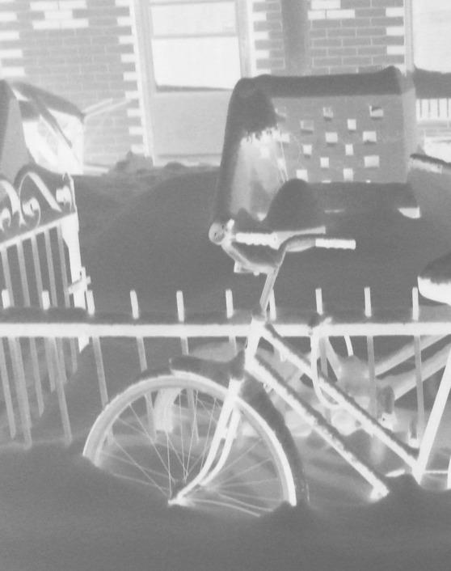
blesser. Moi j’ai la couenne dure et je suis moins sensible au juge-
ment des autres. Je suis restée debout devant el e pendant de
longues minutes, ne sachant pas au juste quoi faire et quoi pen-
ser. Puis Raph m’a tendu les bras. J’ai saisi ses mains et je me suis
assise près d’el e. Nous nous sommes embrassées doucement
puis la passion a pris le dessus. Nos vêtements ont été expédiés
dans un temps record. Nous avons fait l’amour là, dans le salon.
C’était bizarre. J’avais l’impression qu’il fal ait qu’on s’aime enco-
re plus fort, comme si le danger avait attisé nos sentiments. En-
suite, Raphaël e a pleuré et m’a dit qu’il fal ait se préparer au pire.
Je lui ai répondu que moi aussi j’avais peur mais qu’au moins, nous
étions deux et qu’Andy était là, lui aussi. Il m’a dit un jour qu’il
ferait le garde du corps si on en avait besoin. Andy n’est pas super
imposant physiquement, mais pas mal de monde le respecte
à l’école. Enfin, j’espère que cette histoire ne va pas lui nuire. Je
n’ai pas envie que mes amis souffrent à cause de mes histoires
de cœur.
Florence tourne en rond dans sa chambre. Ses mains sont moi-
tes et elle a mal au ventre. Elle ne se sent pas prête à retourner
à l’école et se demande s’il ne serait pas plus sage de rester à la
maison, à l’abri des railleries et des mots blessants. Elle s’installe
devant son ordinateur et vérifie s’il n’y a pas de message. Rien.
Elle entend son père crier son nom. Il lui demande de descendre,
il va la déposer à l’école. Elle prend ses affaires et descend rejoin-
dre sa famille à la cuisine.
93
— Tu as une petite mine, remarque sa mère en débarrassant la
table. Ça ne va pas ?
Le cœur de Florence bat la chamade et elle lutte pour ne pas
pleurer. Elle tourne la tête et répond que tout va très bien. Elle
aimerait dire ce qu’il se passe en elle, en ce moment précis, mais
n’y arrive pas. Toujours ce même espace, long comme dix ter-
rains de football, qui la sépare de sa mère.
— Bon… Eh bien, bonne journée, Florence, prononce Sandra
d’une voix douce, en se dirigeant vers la porte. Au fait, j’ai pensé
que nous pourrions peut-être nous faire une petite fin de semaine
à New York, juste toi et moi. Il me semble que ça pourrait être
agréable de se retrouver ensemble, la mère et la fille, pour deux ou
trois jours, ajoute-t-elle en revenant sur ses pas.
— New York ? répète Florence, surprise par la proposition.
Quand ?
— Je ne sais pas. C’est juste une idée comme ça. Si tu veux, on
s’en reparle ce soir. Il faut que j’y aille.
Sandra hésite, puis s’approche de Florence. Elle dépose en vi-
tesse un baiser sur sa joue et se sauve.
— Tu es prête ? demande Paul.
Florence soupire et va prendre son manteau. Non, elle n’est pas
prête et ne le sera jamais.
— J’arrive, murmure-t-elle d’une voix à peine audible.
La voiture de Paul démarre. Il jette un œil sur sa fille et se de-
mande quelle mouche l’a piquée depuis deux jours.
— Est-ce que ça va avec Raphaëlle ?
Florence regarde sur sa droite et grommelle quelque chose qui
s’approche d’un oui. Le feu rouge passe au vert et la voiture se re-
met en route.
— Pa, peux-tu me laisser ici ? J’ai besoin de prendre l’air. Je
vais marcher un peu.
94
Paul s’arrête et saisit le bras de Florence avant qu’elle ne sorte
de la voiture. Leurs regards se heurtent. Il voudrait parler, mais
il se tait. Sa fille lui semble inaccessible et il en souffre.
Florence tente de sourire, espérant camoufler la trouille qui ne
cesse de grossir en elle. Son père lâche son bras et elle s’échappe
de la voiture. Elle marche vite, ravale ses larmes. La voiture de
son père s’éloigne, puis disparaît de son champ de vision. L’école
est là, devant elle. Des adolescents crient et se bousculent sur le
trottoir. Elle doit faire face à qui elle est, une fille qui aime une
autre fille. Mais pourquoi se réduire à ça ? Pourquoi les gens la ré-
duiraient-ils à ça ? Le fait de préférer les filles aux garçons lui
semble un détail insignifiant prenant vraiment trop de place
dans sa vie. . L’essentiel est ailleurs. Florence sait qu’il y a une
multitude de facettes à sa personnalité et elle n’a pas envie d’être
réduite à son orientation sexuelle. « C’est trop stupide», pense-
t-elle, en voyant Andy apparaître devant elle, le sourire aux lè-
vres. Il s’approche et l’embrasse sur les deux joues. Ses lèvres ef-
fleurent son oreille. Il lui murmure de ne pas s’inquiéter, que
tout ira bien.
Florence cherche Raphaëlle du regard. Elle n’est pas là. Elle a
soudainement peur que son amie n’ait pas trouvé la force de
revivre ce qu’elle a déjà vécu il n’y a pas si longtemps, à Londres.
« Et si elle ne venait pas ? Et si elle m’abandonnait ? » se dit-elle,
en balayant la foule du regard, à la recherche de Raph.
— Salut, entend-elle dans son dos.
Elle se retourne. Raphaëlle est là, aussi angoissée qu’elle. Flo-
rence prend une grande respiration. Raph est là. Elle ne lui a pas
fait faux bond. Ça va déjà un peu mieux. Dans les yeux de son
amie, elle peut lire : « Ne t’inquiète pas. Je suis là et je serai tou-
jours là pour toi. »
95
12 novembre
Je rêve du jour où quelqu’un trouvera le vaccin capable de venir
à bout de la bêtise humaine. Il y a vraiment trop d’imbéciles sur cet-
te Terre. Je l’ai toujours su et cette semaine, j’en ai vu de beaux
spécimens. Chloé a été fidèle à el e-même et en moins de deux
jours, tout le monde a su que Raph et moi sortions ensemble. Je
ne sais pas pourquoi l’homosexualité fait si peur aux gens. Pour-
quoi le fait d’embrasser une personne du même sexe est perçu
comme quelque chose de sale, de laid, de pervers ? Toute la semai-
ne, Raph et moi avons croisé des visages outrés, dégoûtés ou
honteux. Comme si nous étions des pestiférées, des sorcières à
brûler vives sur un bûcher. On dirait que pour les gens, l’homo-
sexualité c’est juste une affaire de sexe et de désirs malsains.
L’amour et les sentiments, ils y pensent bien après, voire jamais.
Heureusement, la plupart des élèves semblent indifférents. La
société a quand même évolué. Je n’ose pas imaginer ce que c’était
d’être gai quand mes grands-parents ou même mes parents
avaient mon âge…
Hier, une fil e est venue me voir et m’a dit qu’el e trouvait ça super
courageux de notre part de vivre notre relation sans nous cacher.
Son père est homo. Ça m’a beaucoup touchée qu’el e vienne vers
moi, comme ça. Disons qu’el e m’a réconciliée avec l’espèce hu-
maine… Surtout après ce qui est arrivé mercredi. Marjolaine nous
a convoquées, Raph et moi, dans son bureau : le prof d’éducation
physique avait trouvé une pancarte dans le vestiaire des fil es. El e
nous l’a montrée. Dessus, on pouvait lire : « Attention, il y a des
butchs dans l’école. » Je me suis mise à rire. J’ai dit que j’al ais met-
tre un dentier avec deux longs crocs devant et que j’al ais me ca-
cher dans les toilettes pour fil es pour leur faire peur. Raphaël e,
96
ça ne l’a pas fait rire du tout. El e a cru que tout recommençait
comme à Londres. Marjolaine nous a dit qu’il fal ait trouver le cou-
rage de rester dignes et marcher la tête haute. El e a raison, mais
ce n’est pas tous les jours facile. Tapette, pédé, gouine, pédale,
butch, dyke… Ce n’est pas les mots qui manquent pour ridiculiser
l’homosexualité. Sans compter les farces plates des gars qui nous
regardent avec un début d’érection. Il y a toujours des scènes en-
tre femmes dans les films pornos et ils semblent bien apprécier.
Même Carl et Pedro m’ont avoué qu’ils aimaient voir deux femmes
ensemble dans les films. J’imagine qu’il faudra apprendre à vivre
avec ça…
Heureusement, il n’y a pas eu seulement des problèmes cette se-
maine. Ma mère m’a reparlé de son idée de voyage à New York.
Nous partirons entre Noël et le jour de l’An. Je voulais que
Raphaël e nous accompagne, mais ma mère a insisté pour que
nous soyons juste toutes les deux. Je me demande bien ce qu’on
va pouvoir se dire, mais j’ai tel ement envie de voir New York que je
suis prête à endurer ma mère pour deux ou trois jours. Je sais que
je suis une fil e ingrate. Ma mère fait beaucoup d’efforts en ce
moment pour se rapprocher de moi. Je devrais être reconnais-
sante, mais il y a toujours plein d’émotions contradictoires qui
se disputent en moi quand je pense à ma mère. Je ne peux pas
faire autrement. Quelquefois, quand el e n’est pas là, je me dis
que j’ai une mère dynamique, ouverte d’esprit et qu’el e mérite
que je sois gentil e avec el e. Mais dès qu’el e est devant moi à bou-
ger et à parler, el e m’énerve et je deviens méchante. Je l’aime
quand el e est loin de moi et je la déteste quand el e est trop pro-
che. Peut-être que nous ne sommes pas faites pour vivre ensem-
ble ? Mon père dit qu’on se ressemble trop et que c’est pour
ça qu’on ne peut pas s’entendre. Je sais que je lui ressemble
97
physiquement, mais je n’ai pas le même tempérament que ma
mère ! Je refuse de croire ça !
En quittant l’école, Florence aperçoit Andy, appuyé dos au mur
en train de fumer une cigarette, le visage tourné vers le soleil, les
yeux fermés. Elle le trouve beau, comme ça, avec son allure de
bad boy, lui si gentil et sensible. Elle s’approche, sourire aux lè-
vres. Il se tourne vers elle, l’air triste.
— Flo, ton frère s’est fait battre. Je n’ai rien pu faire pour lui…
Quand je suis arrivé, il y avait déjà deux profs en train de les sépa-
rer. Je pense que ton père est venu le chercher. Il avait le visage pas
mal amoché…
— Merde… Andy, peux-tu dire aux autres que je serai en retard
à la répétition ?
Florence court jusque chez elle. Son frère a beau être un grand
idiot, l’idée qu’il soit défiguré ne l’enchante pas.
Elle a à peine passé la porte que sa mère l’attrape par les épaules
et lui annonce :
— Ton frère s’est battu. Ton père a dû l’amener à l’hôpital pour
faire des radios.
— C’est grave ?
— Ils viennent de rentrer. Il a une légère commotion cérébrale,
il va falloir le surveiller pendant 24 heures. D’après le médecin, il
n’a rien de cassé, mais il a le visage recouvert. .
Elle ne laisse pas sa mère terminer sa phrase et monte l’escalier
en vitesse. La porte de la chambre de Thomas est ouverte et son
père est à son chevet.
98
— T’as… Ça fait mal ? demande-t-elle, la gorge serrée.
Thomas tourne la tête pour ne pas regarder sa sœur et garde le
silence.
— C’est qui l’épais qui t’a fait ça ? demande-t-elle encore, de
plus en plus énervée.
— Florence, viens, on va laisser ton frère se reposer.
À contrecœur, elle suit son père hors de la chambre.
— Ton frère s’est battu pour toi. Il n’en pouvait plus d’entendre
les garçons de sa classe se moquer de toi. Il a fait ça pour te défen-
dre. Il s’en est pris à un gars qui fait deux fois son poids. Je ne suis
pas d’accord avec la violence, Florence, mais je dois avouer que
ton frère a été courageux.
Florence a du mal à croire les paroles que vient de prononcer
son père. Son petit frère tant détesté, Thomas, s’est fait casser la
figure pour la défendre, elle, sa grande lesbienne de sœur. Elle re-
tourne dans la chambre de Thomas et s’assoit près de lui sur le lit.
Il évite de la regarder, mais ne lui demande pas de partir.
— Thomas, papa vient de me dire que tu t’es battu pour moi.
C’est vrai ? T’as vraiment fait ça ?
Thomas se décide enfin à regarder sa sœur. Son œil droit ne
peut pas s’ouvrir et sa lèvre inférieure est fendue. Il a des marques
rouges et violacées partout sur le visage.
— J’en pouvais plus de l’entendre, ce gros porc de Fournier. Il
n’arrête pas de me dire que ma sœur est une bouffeuse de chatte,
une brouteuse de gazon. Tu penses que c’est agréable d’entendre
ça à longueur de journée ? Je t’haïs, mais t’es ma sœur quand
même. Toi, tu ne penses jamais à ta famille, mais moi, oui ! C’est
important pour moi ma famille.
Florence observe son frère, abasourdie. Il faudrait qu’elle fasse
quelque chose, qu’elle le prenne dans ses bras ou qu’elle l’embras-
se sur le front. Elle n’y arrive pas.
99
— Bouffeuse de chatte… répète-t-elle. N’importe quoi ! Thomas,
c’est vrai que je ne fais pas beaucoup d’efforts pour la famille,
comme tu dis, et c’est vrai que souvent, tu m’énerves à un point
que tu ne peux pas imaginer. Mais je n’y peux rien, je suis comme
ça. Nous sommes trop différents toi et moi…Thomas, je ne veux
pas que tu te battes pour moi. Ça ne sert à rien. Tu as beau taper
dans le gros Fournier, ça ne le fera pas devenir intelligent.
Elle se relève et s’éloigne.
— Flo ?
— Quoi ?
Thomas réfléchit un instant, puis détourne une fois de plus son
regard.
— Non. Rien.
Florence soupire et referme la porte derrière elle. Elle se dit
qu’elle irait bien donner une bonne claque au gros Fournier…
12 décembre
Le directeur de l’école organise un concert le dernier jour avant
les vacances de Noël. Il nous a demandé de préparer quelques
morceaux. Inutile de dire que c’est tout un défi pour nous de
jouer à l’école. Il y aura ceux qui n’aiment pas le genre de musique
que nous faisons, ceux qui ne peuvent pas sentir les gais et ceux
qui critiquent tout le temps tout et n’importe quoi. Ce n’est pas fa-
cile d’affronter la critique. Même pour moi, qui ne suis pourtant
pas la plus sensible à ce niveau-là, c’est difficile d’entendre que ce
que je suis ou ce que je fais c’est de la merde. Andy dit que c’est une
100
bel e occasion de montrer à tout le monde à quel point on a fait
des progrès. Pour moi, c’est aussi l’occasion de montrer que je suis
plus qu’une louve solitaire, marginale et gaie. Pour une fois, je n’ai
pas envie de me dénigrer, au contraire, je veux être dans la lumière
et montrer ce que j’ai dans les tripes. Et puis Carl et Pedro joueront
avec nous. Je me sentirai plus forte si tout le groupe est là. Et com-
me ils sont plus vieux, ils ne se laisseront pas démonter par une pe-
tite bande de morveux.
Sinon, la vie continue d’être bel e quand je suis seule avec Raphaël e,
malgré les doutes qui parfois remontent de je ne sais où. . S’il n’y
avait pas mes parents pour nous freiner, je crois que nous passe-
rions toutes nos nuits ensemble, chez el e. Raph peut maintenant
dormir à la maison, mais je ne me sens pas à l’aise de faire l’amour
avec el e quand je sais que mon frère est dans la chambre juste
à côté. Chez el e, c’est plus simple. Son père dort au rez-de-chaus-
sée. Avec Raph, on pense à la possibilité de prendre un apparte-
ment ensemble l’an prochain. Un petit endroit juste à nous ! Ma
mère trouve que c’est de la folie de dépenser de l’argent pour un
appartement pendant mes études, mais j’ai trop hâte d’être indé-
pendante. Je travail erai en même temps que l’école et je ne de-
manderai rien à mes parents.
Pour ce qui est de New York, pour une fois, ma mère semble vouloir
tenir sa promesse. Comme quoi, tout peut arriver dans la vie ! Ma
mère est une spécialiste dans l’art de me décevoir. El e m’a fait le
coup tel ement souvent ! Quand j’étais petite, el e me promettait
dix mil e sorties ou cadeaux et j’en voyais rarement la couleur…
Je ne sais pas comment se déroulera ce petit voyage, mais j’ai hâte
de voir New York, même si je sais que je vais m’ennuyer à mourir
sans Raphaël e.
101
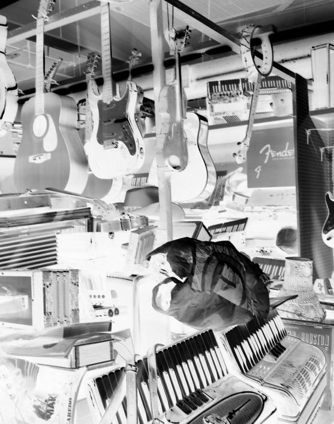
Dans moins d’une heure, Bonnie and Clyde feront leur appari-
tion. Ils passeront à la toute fin du concert, après un petit ensem-
ble de musique classique. Andy court dans tous les sens
et fume cigarette sur cigarette. Il y a des jours où Florence trouve
qu’il ressemble à James Dean dans La fureur de vivre. Il est de plus
en plus beau et les filles de plus en plus dingues de lui. Les autres
membres du groupe ont fait des paris sur qui sera la prochaine
fille dans sa vie. Il a fini de digérer son histoire avec Chloé, et son
cœur est à prendre. Et puis de voir Florence et Raphaëlle aussi
bien ensemble lui donne envie d’être à nou veau amoureux.
— Hé ! Où est passée Raphaëlle ? demande Andy. Il faut qu’elle
arrive tout de suite ! On va jouer dans quelques minutes !
Florence pose sa guitare et va rejoindre Raphaëlle qui ne ressort
plus des toilettes.
— Raph ? Ça va ? T’es malade ?
Raphaëlle tire la chasse d’eau et sort, verte comme une asperge.
— Je pense que c’est le trac. J’ai vomi et ça va mieux.
— Attends, je vais chercher du maquillage. Ton mascara a
coulé.
Florence court jusqu’à sa case chercher ses affaires. Raphaëlle
reste seule et en profite pour faire des exercices d’échauffement
vocal. Elle sent une présence dans son dos et se retourne brus-
quement. Chloé est là avec toute son arrogance. Elle dévisage
Raphaëlle d’un air provocateur.
— Tu veux quoi ? Tu cherches quoi ? lui demande Raphaëlle en
soutenant son regard.
— Rien. Je suis juste venue aux toilettes. J’ai le droit, non ? À
moins que ces toilettes soient maintenant réservées aux lesbien-
nes ? Avez-vous déjà pensé que vous seriez mieux du côté des
garçons ? Ah oui, j’oubliais ! Vous ne pouvez pas pisser debout !
— Laisse-la tranquille !
103
Chloé sursaute et se retourne. Andy se tient derrière elle, le vi-
sage dur. Il s’approche et saisit son bras.
— Lâche-moi ! Tu me fais mal ! Et qu’est-ce que tu fais dans les
toilettes des filles ?!
— Je suis venu chercher Raph. Et puis de toute façon, je n’ai pas
de compte à te rendre !
— Andy, arrête. Elle s’en allait. N’est-ce pas, Chloé, que tu t’en
allais ? demande Raphaëlle.
Andy libère sa prise et Chloé reste un moment à se masser le
poignet.
— J’espère que tes deux amies te donnent des cours. Elles sont
sûrement meilleures que toi au lit avec une fille, lance-t-elle à
Andy avant de déguerpir.
Florence revient, une trousse de maquillage à la main.
— Qu’est-ce qu’elle voulait ? Vous en faites une tête !
— Elle veut que vous me donniez des cours pour faire l’amour,
répond Andy.
— Il ne manquerait plus que ça ! s’exclame Florence en riant.
Elle se tourne vers Raphaëlle.
— Ton maquillage !
— Laisse tomber. Je reste comme ça.
Raphaëlle attrape Florence par la taille et dépose un léger bai-
ser sur ses lèvres.
— C’est dégueu ! Tu viens de vomir ! s’insurge Florence en s’es-
suyant la bouche du revers de la main.
Les cinq membres du groupe se rassemblent dans les coulisses
et forment un cercle.
— Come on, Bonnie and Clyde ! Nous allons leur montrer ce
qu’on a dans le ventre ! clame Andy.
Des applaudissements et des cris se font entendre. Le quatuor à
cordes quitte la scène. Raphaëlle et Florence se pressent contre
104
le mur pour les laisser passer. La violoncelliste leur sourit derrière
son instrument encombrant.
— Bonne chance, les filles ! dit-elle en faisant un clin d’œil à
Florence, visiblement troublée par la jeune femme.
— Eh ! Ça va, il faut t’en remettre, murmure Raphaëlle, agacée.
— Ben quoi ? Qu’est-ce que j’ai fait ? Elle est belle, non ?
— Belle mais hétéro à mort ! Arrête de draguer les filles et
concentre-toi un peu. C’est à nous !
Raph serre la main de Flo très fort dans la sienne.
Le groupe s’avance sur la scène. Florence remarque Thomas
dans les premières rangées, avec sa mine renfrognée. Derrière lui,
le gros Fournier fait des gestes obscènes en direction de la scène.
« Toi, si tu continues comme ça, tu vas avoir affaire à la grande
sœur avant longtemps », se dit Florence en branchant sa guitare à
l’ampli.
Quelques personnes applaudissent et d’autres huent. Florence
regarde tous ces visages, prêts à se moquer d’eux si jamais ils
ne sont pas à la hauteur. Elle est morte de trouille. Carl bat la me-
sure. Un, deux, trois, quatre. Le moment est venu de jouer, de
donner le meilleur de soi-même. Ils ont choisi la chanson « Fal-
len » d’Evanescence pour commencer. C’est Raphaëlle qui a in-
sisté. Elle connaît cette chanson sur le bout des doigts. Au début,
sa voix tremble un peu, mais prend rapidement de l’assurance.
Les gens dans la salle n’existent plus, il n’y a que la musique qui
compte.
C’est la fin du premier morceau. Des filles hurlent le nom
d’Andy. Ce dernier ne peut résister et joue la star derrière sa basse.
Des spectateurs continuent de faire la gueule, mais après deux
autres chansons, dont « Smells Like Teen Spirit » de Nirvana,
la musique vient à bout des plus récalcitrants. Ne reste que quel-
ques âmes en peine, dont Chloé, qui s’accroche au bras de son
105
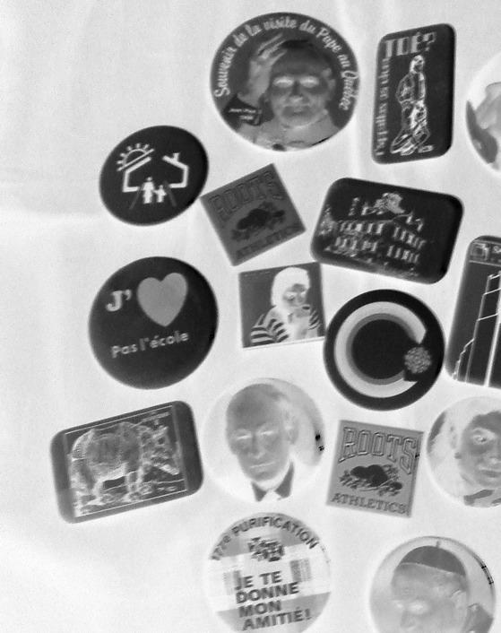
nouveau copain en serrant les mâchoires. Tout se déroule comme
prévu jusqu’à la fin du concert.
Le directeur prend la parole et souhaite de bonnes vacances
à tout le monde. Les élèves se dispersent en se bousculant, surex-
cités par la musique. Quelques filles restent devant les musiciens
et sourient timidement à Andy, Carl et Pedro. Personne n’ose
s’approcher de Florence et Raphaëlle, mais plusieurs les regar-
dent, intriguées.
— Tu crois qu’il y a d’autres filles comme nous dans l’école ?
demande Florence en rangeant sa guitare dans son étui.
— Ben, s’il y a entre 5 et 10% de la population qui est homo, ça
voudrait dire que nous ne sommes pas les seules. Qui sait, nous
avons peut-être des groupies comme Andy ? Tiens, ton frère
arrive !
Raphaëlle se tourne et saute dans les bras de Carl en criant de
joie. Thomas s’avance timidement. Il tend un petit paquet mal en-
veloppé à sa sœur.
— Tiens. C’est ton cadeau de Noël. Je te le donne un peu en
avance.
Florence fronce les sourcils et développe le présent.
— Des cordes de guitare ! Vive les cadeaux utiles !
— Flo, je te déteste toujours autant, mais je suis fier de toi, dit-il,
rouge jusqu’aux oreilles. Tu joues super bien.
Florence lui donne un coup de poing sur l’épaule.
— Peut-être qu’un jour on ne se détestera plus, toi et moi,
dit-elle.
— Ouais. Peut-être bien, répond Thomas avant d’aller rejoin-
dre ses copains.
107
27 décembre
Je suis à New York ! Cette vil e me donne envie de voyager, d’al er
voir ail eurs ce que le monde a à offrir. Ma mère m’a raconté qu’à
18 ans, el e et son petit ami de l’époque étaient venus ici. El e m’a
raconté des choses qu’el e ne m’avait jamais dites sur son passé,
son adolescence. C’est bizarre… Comme si le fait d’être loin de la
maison nous permettait de nous rapprocher. El e m’a dit qu’el e
avait dû se faire avorter quelques mois avant de rencontrer mon
père et que jamais el e n’avait oublié ce jour de janvier, alors qu’il
faisait -30° et qu’el e pleurait en attendant l’autobus avec sa
meil eure amie pour se rendre à la clinique. El e m’a dit que j’avais
ce problème en moins en couchant avec une fil e. El e a ri et moi
aussi. Je suis contente d’être ici, avec el e. Je ne sais pas si cette bon-
ne entente durera quand nous retournerons à Montréal. Peu im-
porte. Je profite de cette accalmie.
Je rentre le 30 à Montréal. Nous passons le jour de l’An ensemble,
les cinq Bonnie and Clyde. Raph me manque. J’aimerais qu’el e soit
là à mes côtés dans cette vil e immense. Son sourire me manque.
La douceur de sa peau, la lumière vive de ses yeux me manque.
Je l’aime.
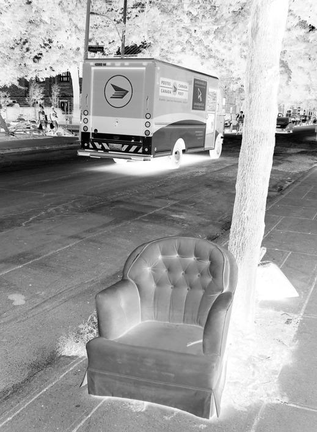
Un an plus tard
109
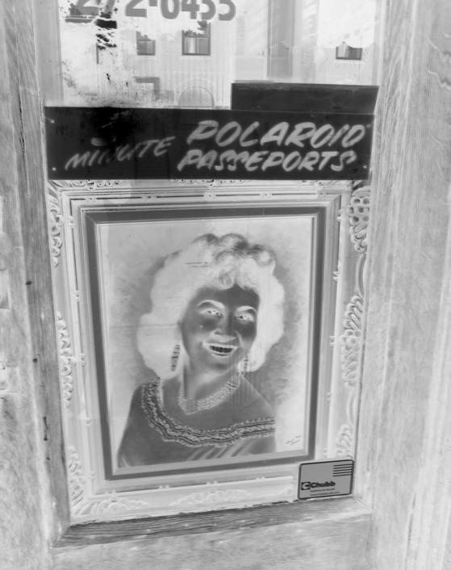
20 décembre
Nous sommes dans le train de nuit, entre Barcelone et Paris. Je n’ai
pas sommeil et Andy dort comme une bûche dans sa couchette.
J’ai eu envie d’écrire un peu dans ce journal encore vierge que m’a
offert ma mère avant mon départ de Montréal. Nous sommes par-
tis le lendemain de mon dix-huitième anniversaire, sac au dos.
Comme moi, Andy ne se sentait pas prêt pour le cégep et nous
avons choisi de ne pas retourner à l’école en septembre. Dès que
nous avons eu assez d’argent, nous avons acheté nos bil ets d’avion
pour Paris. J’avais besoin de quitter Montréal, de changer d’air, de
monde, d’environnement. J’avais besoin de me vider la tête et de
partir loin de tout. Peut-être que ces quelques semaines de voyage
m’aideront à trouver ce que je veux faire de ma vie. Peut-être pas.
Mais au moins, j’aurai vu quelques coins d’Europe.
Quand Raphaël e m’a laissée à la fin juin, j’ai décidé de ne pas
rentrer au cégep à l’automne. Ce fut l’été le plus pourri de toute ma
vie. Je m’en voulais à mort d’avoir tout gâché. Tout est de ma fau-
te… Pedro m’attirait. J’ai couché avec lui. J’avais besoin de savoir
comment c’était avec un garçon. Je voulais être sûre de ne pas me
tromper. J’ai préféré jouer franc jeu et je l’ai dit à Raph. El e n’a pas
compris. Je l’ai blessée et el e m’a éjectée de sa vie à coup de « je te
déteste ». Bonnie and Clyde n’ont évidemment pas résisté à la cri-
se. Andy m’en a beaucoup voulu, mais pas autant qu’à Pedro. Il
croit que c’est lui le grand coupable de ma rupture avec Raphaël e
et de la mort du groupe. Moi je sais que ce n’est pas lui, c’est moi la
vraie coupable. Je pensais juste à moi, j’ai tout fait exploser et il ne
se passe pas une journée sans que je le regrette.
111
Depuis notre départ, à chaque fois que nous changeons de vil e ou
de vil age, j’envoie une carte postale ou un petit mot à Raphaël e.
El e ne répond jamais, mais je ne perds pas espoir. Avant de partir,
j’ai voulu la voir, j’avais besoin de lui parler, de lui dire que je l’aimais.
El e a refusé. Dans l’avion qui nous amenait à Paris, je n’ai pas arrêté
de pleurer. Andy n’en pouvait plus de me voir le visage ruisselant
et la morve au nez. Il essayait de me changer les idées en me racon-
tant des blagues idiotes. Andy ! Je ne pourrai jamais trouver un
meil eur ami que lui ! Mes parents étaient rassurés de me voir par-
tir en sa compagnie. Ils ne voulaient pas que je parte seule pendant
deux mois, si loin de la maison. Moi aussi je suis heureuse qu’il soit
avec moi. On s’amuse bien tous les deux. Le plus drôle, c’est quand
on regarde les fil es ensemble. Évidemment, il a plus de succès que
moi. Pas difficile, comme la grande majorité des fil es sont attirées
par les garçons… Nous sommes al és dans une discothèque gaie à
Barcelone. Ça m’a bien amusée de voir Andy au milieu de tous ces
beaux garçons ! Le pauvre, il n’était pas super à l’aise, mais il tenait à
m’accompagner. Il y a une fil e assez jolie qui est venue vers moi.
Nous avons passé la soirée ensemble, mais j’ai refusé de la suivre
chez el e. Je ne voulais pas abandonner Andy et puis je n’arrêtais
pas de penser à Raph. Je ne me voyais pas coucher avec quelqu’un
d’autre. En sortant du bar, Andy m’a dit qu’il pouvait comprendre
que j’aie parfois envie d’être avec des personnes comme moi. Il
comprend que ce n’est pas évident tous les jours de faire partie
d’une minorité.
Demain matin, nous serons de retour à Paris et comme nous n’arri-
vons pas à nous mettre d’accord sur la prochaine destination avant
de rentrer à Montréal, nous avons décidé de nous séparer. Andy ira
à Amsterdam et moi, à Tel-Aviv. Mes parents ne voulaient pas
que j’ail e en Israël. Ils ont peur des attentats qui peuvent survenir
112
à tout moment là-bas. Mais je suis une grande fil e maintenant. Je
ferai donc ce que j’ai envie de faire. J’irai au centre gai et lesbien de
Tel-Aviv. Je pense souvent à la fusil ade qui a fait deux mort là-bas
l’an dernier. Cet événement m’a fait prendre conscience à quel
point il peut être compliqué d’être différent et jusqu’où les êtres
humains sont capables d’al er dans leur haine des autres. J’aime-
rais al er déposer une pierre sur la tombe de la jeune fil e qui a été
assassinée. Un petit cail ou pour lui dire que sa mort a bouleversé
une mère et sa fil e, quelque part, à l’autre du bout du monde.
Hier, j’ai encore envoyé un courriel à Raphaël e. Je me suis juré que
c’était le dernier s’il n’y avait pas de réponse. Je tente un dernier
rapprochement avant de jeter l’éponge et de passer à autre chose.
« Passer à autre chose ». Cette phrase me donne envie de vomir.
Les amours sont-ils interchangeables comme des vêtements ? J’ai
du mal à le croire ou, plutôt, ça me fait mal d’y croire. Comment
pourrais-je oublier Raphaël e, mon premier amour ? J’espère que
notre histoire n’est pas terminée et qu’el e voudra de moi à mon
retour à Montréal. Dans mon message, je lui dis que si el e éprouve
encore des sentiments pour moi, je serai au Buzz Café le 30 décem-
bre à 18 h. D’ici là, je vivrai avec l’angoisse de ce rendez-vous. Vien-
dra-t-el e ou ne viendra-t-el e pas ? L’espoir fait vivre, il paraît. Je
garde espoir.
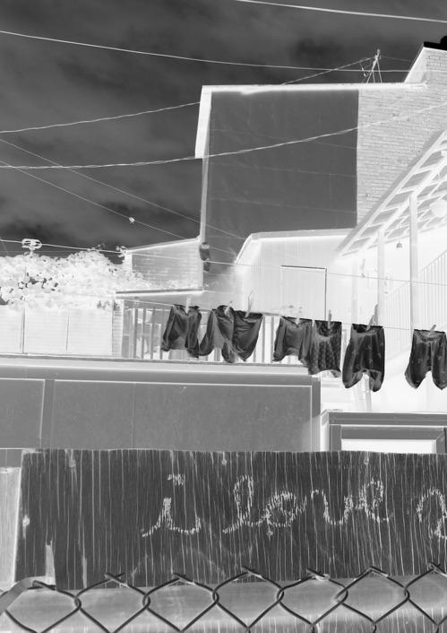
114
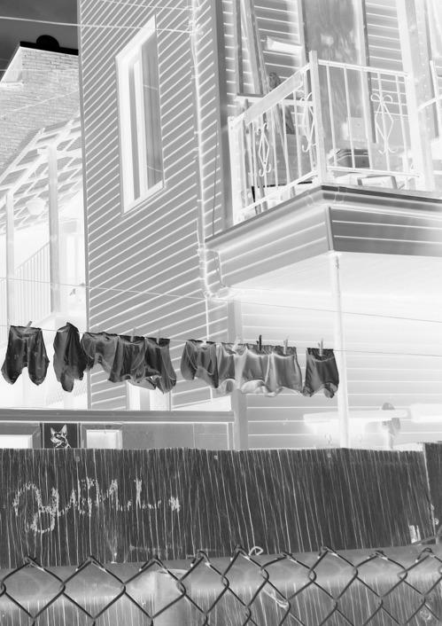
115
POUR CELLES ET CEUX QUI SE POSENT DES QUESTIONS…
QUELQUES PISTES POUR TROUVER DES RÉPONSES
Ce guide de ressources n’est pas exhaustif et Remue-ménage
ne peut garantir le contenu de chaque référence.
AU QUÉBEC
ALTERHÉROS
www.alterheros.com/francais
DES INFOS PAR TÉLÉPHONE
info@alterheros.com
OU SUR LE NET
Portail Internet : informations,
forum, listes d’organismes
GAI ÉCOUTE
Français et anglais
514 866-0103 (Montréal)
1 888 505-1010
COALITION JEUNESSE
www.gaiecoute.org
MONTRÉALAISE
aide@gaiecoute.org
DE LUTTE CONTRE
Aide, écoute téléphonique et
L’HOMOPHOBIE
renseignements en lien avec
www.coalitionjeunesse.org
l’orientation sexuelle
Gratuit, anonyme et confidentiel
info@coalitionjeunesse.org
Français et anglais
PROJET 10
www.p10.qc.ca
GAY LINE
questions@p10.qc.ca
514 866-5090 (Montreal)
Pour toute question en lien avec
1 888 505-1010
l’orientation sexuelle
www.gayline.qc.ca
Français et anglais
Gratuit et confidentiel
Volunteers lend an ear to callers
and give out appropriate information
TEL-JEUNES
and referrals
Free, anonymous and confidential
1 800 263-2266
(English only)
http:/ teljeunes.com
Ressource professionnelle,
pour toutes les questions
que se posent les jeunes dans
tous les domaines.
24 heures sur 24 et 7 jours sur 7
Gratuit et confidentiel
DES LIEUX OÙ ALLER
À Montréal
À Lévis
JEUNESSE LAMBDA
GROUPES DE
www.jeunesselambda.org
DISCUSSION
info@jeunesselambda.org
(GRIS-Chaudière-
Accueil, discussions
Appalaches)
et activités , pour les moins de 25 ans
www.grischap.qc.ca
infogrisca@gmail.com
PROJET 10
Un groupe pour les 14-17 ans et un
www.p10.qc.ca
autre pour les 18-25 ans
questions@p10.qc.ca
Soutien individuel, infos et activités,
À Québec
pour les jeunes de 14 à 25 ans
Français et anglais
L’ACCÈS (GRIS-Québec)
www.grisquebec.org
COSUM
l_acces@grisquebec.org
(Centre d’orientation sexuel e
418 523-4808
de l’Université McGil )
Écoute, aide, références,
www.mcgil .ca/cosum
ateliers et activités, pour les jeunes
514 934-1934 poste 43585
de 14 à 25 ans
Clinique de santé mentale dédiée aux
LGTB et leurs familles, thérapies
À Terrebonne
individuelles, familiales et de groupe
Français et anglais
LE NÉO
www.le-neo.com
À Victoriaville
Martin@le-neo.com
450 964-1860
LA MARG’ELLE
1 800 964-1860
lamargel e.spaces.live.com
margel eboisfrancs@hotmail.com
À Gatineau
JEUNESSE IDEM
www.jeunesseidem.com
jeunesseidem@lebras.qc.ca
819 776-1445
1 877 776-1445
DES RENCONTRES
POUR LES PERSONNES
Les quatre GRIS (Groupe de recherche IMPLIQUÉES AUPRÈS
et d’intervention sociale) ont le même DES JEUNES
objectif : démystifier l’homosexualité.
Les interventions se font par des
COALITION
témoignages de bénévoles spéciale-
DES FAMILLES
ment formés pour partager leurs vécus HOMOPARENTALES (CFH)
et leurs connaissances sur l’homo-
www.famil eshomoparentales.org
sexualité et pour répondre aux
info@famil eshomoparentales.org
questions des jeunes de façon adaptée. Regards sur les familles homoparenta-
GRIS-CENTRE
les : formation gratuite pour les
personnes qui travaillent avec des
DU QUÉBEC
jeunes afin d’intervenir face aux
www.griscdq.org
incidents et à l’intimidation à
info@griscdq.org
connotation homophobe ou sexiste.
819 445-0007
CENTRE COMMUNAU-
GRIS-CHAUDIÈRES-
TAIRE DES GAIS ET
APPALACHES
LESBIENNES
www.grischap.qc.ca
www.ccglm.org
infogrisca@gmail.com
biblio@ccglm.org
418 774-4210
La Bibliothèque À livres ouverts :
des milliers de livres écrits par
GRIS-MONTRÉAL
des homosexuels ou traitant
www.gris.ca
d’homosexualité.
info@gris.ca
514 590-0016
FONDATION ÉMERGENCE
www.homophobie.com
GRIS-QUÉBEC
www.fondationemergence.org
www.grisquebec.org
info@grisquebec.org
Création de matériel éducatif,
organisation de campagnes d’éduca-
418 523-5572
tion et de lutte contre les préjugés
envers les homosexuels dont la
Journée internationale contre
l’homophobie, le 17 mai, une occasion
de mettre en valeur la contribution
positive des gais et des lesbiennes dans
la société.
EN FRANCE
EN SUISSE
LIGNE AZUR
TOTEM JEUNES
www.ligneazur.org
www.totemjeunes.ch
contact@ligneazur.org
info@totemjeunes.ch
0-810-20-30-40
ASSOCIATION
LE REFUGE
L’ESSENTIEL
06-31-59-69-50
www.l-essentiel.ch
www.le-refuge.org
info@l-essentiel.ch
Écoute et hébergement
Montpellier, Paris et Marseille
LA BOUSSOLE
24 heures sur 24 et 7 jours sur 7
www.laboussole.ch
info@laboussole.ch
MAG (Mouvement
d’affirmation des jeunes
gais, lesbiennes, bi et trans)
www.mag-paris.fr
EN BELGIQUE
accueil@mag-paris.fr
01-43-73-31-63
EX AEQUO
http:/ jeunexaequo.be
CENTRE LGBT PARIS-IDF
info@exaequo.be
www.centrelgbtparis.org
contact@centrelgbtparis.org
CHEL – Cercle des Jeunes
01-43-57-21-47
Homos Liégeois(es)
www.chel.be
comite@chel.be
AU LUXEMBOURG
LA MAISON ARC-EN-CIEL
CIGALE – CENTRE
www.rainbowhouse.be
D’INFORMATION GAY
info@rainbowhouse.be
ET LESBIEN
02-503-59-90
www.cigale.lu/index_f.html
info@cigale.lu
Achevé d’imprimer en mai 2010
sur papier Enviro Édition,
100 % postconsommation
par l’Imprimerie Gauvin
pour le compte des Éditions du remue-ménage